A Tidygraph version of a Popular Network Science Tutorial
Introduction
This is an attempt to rework , using tidygraph and ggraph, much of Network Visualization with R Polnet 2018 Workshop Tutorial, Washington, DC by Prof. Katherine (Katya) Ognyanova.
The aim is to get a working acquaintance with both these packages and also to appreciate some of the concepts in Networks. My code is by no means intended to be elegant; it merely works and there are surely many improvements that people may think of!
I have attempted to write code for the Sections 2:5.
I have retained Prof. Ognyanova’s text in all places.
CONTENTS
Working with colors in R plots- Reading in the network data
- Network plots in ‘igraph’
- Plotting two-mode networks
- Plotting multiplex networks
Quick example using ‘network’Simple plot animations in RInteractive JavaScript networksInteractive and dynamic networks with ndtv-d3Plotting networks on a geographic map
——-~~ DATASET 1: edgelist ~~——-
id media media.type type.label audience.size
1 s01 NY Times 1 Newspaper 20
2 s02 Washington Post 1 Newspaper 25
3 s03 Wall Street Journal 1 Newspaper 30
4 s04 USA Today 1 Newspaper 32
5 s05 LA Times 1 Newspaper 20
6 s06 New York Post 1 Newspaper 50 from to type weight
1 s01 s02 hyperlink 22
2 s01 s03 hyperlink 22
3 s01 s04 hyperlink 21
4 s01 s15 mention 20
5 s02 s01 hyperlink 23
6 s02 s03 hyperlink 21Converting the data to an igraph object:
The graph_from_data_frame() function takes two data frames: ‘d’ and ‘vertices’. - ‘d’ describes the edges of the network - it should start with two columns containing the source and target node IDs for each network tie. - ‘vertices’ should start with a column of node IDs. It can be omitted. - Any additional columns in either data frame are interpreted as attributes.
NOTE: ID columns need not be numbers or integers!!
net <- graph_from_data_frame(d = links, vertices = nodes, directed = T)
# Examine the resulting object:
class(net)[1] "igraph"IGRAPH 8d2aa7a DNW- 17 49 --
+ attr: name (v/c), media (v/c), media.type (v/n), type.label (v/c),
| audience.size (v/n), type (e/c), weight (e/n)
+ edges from 8d2aa7a (vertex names):
[1] s01->s02 s01->s03 s01->s04 s01->s15 s02->s01 s02->s03 s02->s09 s02->s10
[9] s03->s01 s03->s04 s03->s05 s03->s08 s03->s10 s03->s11 s03->s12 s04->s03
[17] s04->s06 s04->s11 s04->s12 s04->s17 s05->s01 s05->s02 s05->s09 s05->s15
[25] s06->s06 s06->s16 s06->s17 s07->s03 s07->s08 s07->s10 s07->s14 s08->s03
[33] s08->s07 s08->s09 s09->s10 s10->s03 s12->s06 s12->s13 s12->s14 s13->s12
[41] s13->s17 s14->s11 s14->s13 s15->s01 s15->s04 s15->s06 s16->s06 s16->s17
[49] s17->s04The description of an igraph object starts with four letters: -D or U, for a directed or undirected graph -N for a named graph (where nodes have a name attribute) -W for a weighted graph (where edges have a weight attribute) -B for a bipartite (two-mode) graph (where nodes have a type attribute) The two numbers that follow (17 49) refer to the number of nodes and edges in the graph. The description also lists node & edge attributes.
We can access the nodes, edges, and their attributes:
+ 49/49 edges from 8d2aa7a (vertex names):
[1] s01->s02 s01->s03 s01->s04 s01->s15 s02->s01 s02->s03 s02->s09 s02->s10
[9] s03->s01 s03->s04 s03->s05 s03->s08 s03->s10 s03->s11 s03->s12 s04->s03
[17] s04->s06 s04->s11 s04->s12 s04->s17 s05->s01 s05->s02 s05->s09 s05->s15
[25] s06->s06 s06->s16 s06->s17 s07->s03 s07->s08 s07->s10 s07->s14 s08->s03
[33] s08->s07 s08->s09 s09->s10 s10->s03 s12->s06 s12->s13 s12->s14 s13->s12
[41] s13->s17 s14->s11 s14->s13 s15->s01 s15->s04 s15->s06 s16->s06 s16->s17
[49] s17->s04+ 17/17 vertices, named, from 8d2aa7a:
[1] s01 s02 s03 s04 s05 s06 s07 s08 s09 s10 s11 s12 s13 s14 s15 s16 s17 [1] "hyperlink" "hyperlink" "hyperlink" "mention" "hyperlink" "hyperlink"
[7] "hyperlink" "hyperlink" "hyperlink" "hyperlink" "hyperlink" "hyperlink"
[13] "mention" "hyperlink" "hyperlink" "hyperlink" "mention" "mention"
[19] "hyperlink" "mention" "mention" "hyperlink" "hyperlink" "mention"
[25] "hyperlink" "hyperlink" "mention" "mention" "mention" "hyperlink"
[31] "mention" "hyperlink" "mention" "mention" "mention" "hyperlink"
[37] "mention" "hyperlink" "mention" "hyperlink" "mention" "mention"
[43] "mention" "hyperlink" "hyperlink" "hyperlink" "hyperlink" "mention"
[49] "hyperlink" [1] "NY Times" "Washington Post" "Wall Street Journal"
[4] "USA Today" "LA Times" "New York Post"
[7] "CNN" "MSNBC" "FOX News"
[10] "ABC" "BBC" "Yahoo News"
[13] "Google News" "Reuters.com" "NYTimes.com"
[16] "WashingtonPost.com" "AOL.com" # A tbl_graph: 17 nodes and 49 edges
#
# A directed multigraph with 1 component
#
# Edge Data: 49 × 3 (active)
from to type
<int> <int> <chr>
1 1 2 hyperlink
2 1 3 hyperlink
3 1 4 hyperlink
4 1 15 mention
5 2 1 hyperlink
6 2 3 hyperlink
# … with 43 more rows
#
# Node Data: 17 × 5
id media media.type type.label audience.size
<chr> <chr> <int> <chr> <int>
1 s01 NY Times 1 Newspaper 20
2 s02 Washington Post 1 Newspaper 25
3 s03 Wall Street Journal 1 Newspaper 30
# … with 14 more rows# A tbl_graph: 17 nodes and 49 edges
#
# A directed multigraph with 1 component
#
# Node Data: 17 × 1 (active)
media
<chr>
1 NY Times
2 Washington Post
3 Wall Street Journal
4 USA Today
5 LA Times
6 New York Post
# … with 11 more rows
#
# Edge Data: 49 × 4
from to type weight
<int> <int> <chr> <int>
1 1 2 hyperlink 22
2 1 3 hyperlink 22
3 1 4 hyperlink 21
# … with 46 more rowsOr find specific nodes and edges by attribute:(that returns objects of type vertex sequence / edge sequence)
+ 1/17 vertex, named, from 8d2aa7a:
[1] s11+ 20/49 edges from 8d2aa7a (vertex names):
[1] s01->s15 s03->s10 s04->s06 s04->s11 s04->s17 s05->s01 s05->s15 s06->s17
[9] s07->s03 s07->s08 s07->s14 s08->s07 s08->s09 s09->s10 s12->s06 s12->s14
[17] s13->s17 s14->s11 s14->s13 s16->s17#Using tidygraph
tbl_graph(nodes, links, directed = TRUE) %>%
activate(nodes) %>%
filter(media == "BBC")# A tbl_graph: 1 nodes and 0 edges
#
# A rooted tree
#
# Node Data: 1 × 5 (active)
id media media.type type.label audience.size
<chr> <chr> <int> <chr> <int>
1 s11 BBC 2 TV 34
#
# Edge Data: 0 × 4
# … with 4 variables: from <int>, to <int>, type <chr>, weight <int># A tbl_graph: 17 nodes and 20 edges
#
# A directed simple graph with 3 components
#
# Edge Data: 20 × 4 (active)
from to type weight
<int> <int> <chr> <int>
1 1 15 mention 20
2 3 10 mention 2
3 4 6 mention 1
4 4 11 mention 22
5 4 17 mention 2
6 5 1 mention 1
# … with 14 more rows
#
# Node Data: 17 × 5
id media media.type type.label audience.size
<chr> <chr> <int> <chr> <int>
1 s01 NY Times 1 Newspaper 20
2 s02 Washington Post 1 Newspaper 25
3 s03 Wall Street Journal 1 Newspaper 30
# … with 14 more rowsIf you need them, you can extract an edge list or a matrix back from the igraph networks.
[,1] [,2]
[1,] "s01" "s02"
[2,] "s01" "s03"
[3,] "s01" "s04"
[4,] "s01" "s15"
[5,] "s02" "s01"
[6,] "s02" "s03"
[7,] "s02" "s09"
[8,] "s02" "s10"
[9,] "s03" "s01"
[10,] "s03" "s04"
[11,] "s03" "s05"
[12,] "s03" "s08"
[13,] "s03" "s10"
[14,] "s03" "s11"
[15,] "s03" "s12"
[16,] "s04" "s03"
[17,] "s04" "s06"
[18,] "s04" "s11"
[19,] "s04" "s12"
[20,] "s04" "s17"
[21,] "s05" "s01"
[22,] "s05" "s02"
[23,] "s05" "s09"
[24,] "s05" "s15"
[25,] "s06" "s06"
[26,] "s06" "s16"
[27,] "s06" "s17"
[28,] "s07" "s03"
[29,] "s07" "s08"
[30,] "s07" "s10"
[31,] "s07" "s14"
[32,] "s08" "s03"
[33,] "s08" "s07"
[34,] "s08" "s09"
[35,] "s09" "s10"
[36,] "s10" "s03"
[37,] "s12" "s06"
[38,] "s12" "s13"
[39,] "s12" "s14"
[40,] "s13" "s12"
[41,] "s13" "s17"
[42,] "s14" "s11"
[43,] "s14" "s13"
[44,] "s15" "s01"
[45,] "s15" "s04"
[46,] "s15" "s06"
[47,] "s16" "s06"
[48,] "s16" "s17"
[49,] "s17" "s04"17 x 17 sparse Matrix of class "dgCMatrix" [[ suppressing 17 column names 's01', 's02', 's03' ... ]]
s01 . 22 22 21 . . . . . . . . . . 20 . .
s02 23 . 21 . . . . . 1 5 . . . . . . .
s03 21 . . 22 1 . . 4 . 2 1 1 . . . . .
s04 . . 23 . . 1 . . . . 22 3 . . . . 2
s05 1 21 . . . . . . 2 . . . . . 21 . .
s06 . . . . . 1 . . . . . . . . . 21 21
s07 . . 1 . . . . 22 . 21 . . . 4 . . .
s08 . . 2 . . . 21 . 23 . . . . . . . .
s09 . . . . . . . . . 21 . . . . . . .
s10 . . 2 . . . . . . . . . . . . . .
s11 . . . . . . . . . . . . . . . . .
s12 . . . . . 2 . . . . . . 22 22 . . .
s13 . . . . . . . . . . . 21 . . . . 1
s14 . . . . . . . . . . 1 . 21 . . . .
s15 22 . . 1 . 4 . . . . . . . . . . .
s16 . . . . . 23 . . . . . . . . . . 21
s17 . . . 4 . . . . . . . . . . . . . from to type weight
1 s01 s02 hyperlink 22
2 s01 s03 hyperlink 22
3 s01 s04 hyperlink 21
4 s01 s15 mention 20
5 s02 s01 hyperlink 23
6 s02 s03 hyperlink 21
7 s02 s09 hyperlink 1
8 s02 s10 hyperlink 5
9 s03 s01 hyperlink 21
10 s03 s04 hyperlink 22
11 s03 s05 hyperlink 1
12 s03 s08 hyperlink 4
13 s03 s10 mention 2
14 s03 s11 hyperlink 1
15 s03 s12 hyperlink 1
16 s04 s03 hyperlink 23
17 s04 s06 mention 1
18 s04 s11 mention 22
19 s04 s12 hyperlink 3
20 s04 s17 mention 2
21 s05 s01 mention 1
22 s05 s02 hyperlink 21
23 s05 s09 hyperlink 2
24 s05 s15 mention 21
25 s06 s06 hyperlink 1
26 s06 s16 hyperlink 21
27 s06 s17 mention 21
28 s07 s03 mention 1
29 s07 s08 mention 22
30 s07 s10 hyperlink 21
31 s07 s14 mention 4
32 s08 s03 hyperlink 2
33 s08 s07 mention 21
34 s08 s09 mention 23
35 s09 s10 mention 21
36 s10 s03 hyperlink 2
37 s12 s06 mention 2
38 s12 s13 hyperlink 22
39 s12 s14 mention 22
40 s13 s12 hyperlink 21
41 s13 s17 mention 1
42 s14 s11 mention 1
43 s14 s13 mention 21
44 s15 s01 hyperlink 22
45 s15 s04 hyperlink 1
46 s15 s06 hyperlink 4
47 s16 s06 hyperlink 23
48 s16 s17 mention 21
49 s17 s04 hyperlink 4 name media media.type type.label audience.size
s01 s01 NY Times 1 Newspaper 20
s02 s02 Washington Post 1 Newspaper 25
s03 s03 Wall Street Journal 1 Newspaper 30
s04 s04 USA Today 1 Newspaper 32
s05 s05 LA Times 1 Newspaper 20
s06 s06 New York Post 1 Newspaper 50
s07 s07 CNN 2 TV 56
s08 s08 MSNBC 2 TV 34
s09 s09 FOX News 2 TV 60
s10 s10 ABC 2 TV 23
s11 s11 BBC 2 TV 34
s12 s12 Yahoo News 3 Online 33
s13 s13 Google News 3 Online 23
s14 s14 Reuters.com 3 Online 12
s15 s15 NYTimes.com 3 Online 24
s16 s16 WashingtonPost.com 3 Online 28
s17 s17 AOL.com 3 Online 33# A tibble: 17 × 5
id media media.type type.label audience.size
<chr> <chr> <int> <chr> <int>
1 s01 NY Times 1 Newspaper 20
2 s02 Washington Post 1 Newspaper 25
3 s03 Wall Street Journal 1 Newspaper 30
4 s04 USA Today 1 Newspaper 32
5 s05 LA Times 1 Newspaper 20
6 s06 New York Post 1 Newspaper 50
7 s07 CNN 2 TV 56
8 s08 MSNBC 2 TV 34
9 s09 FOX News 2 TV 60
10 s10 ABC 2 TV 23
11 s11 BBC 2 TV 34
12 s12 Yahoo News 3 Online 33
13 s13 Google News 3 Online 23
14 s14 Reuters.com 3 Online 12
15 s15 NYTimes.com 3 Online 24
16 s16 WashingtonPost.com 3 Online 28
17 s17 AOL.com 3 Online 33# A tibble: 49 × 4
from to type weight
<int> <int> <chr> <int>
1 1 2 hyperlink 22
2 1 3 hyperlink 22
3 1 4 hyperlink 21
4 1 15 mention 20
5 2 1 hyperlink 23
6 2 3 hyperlink 21
7 2 9 hyperlink 1
8 2 10 hyperlink 5
9 3 1 hyperlink 21
10 3 4 hyperlink 22
# … with 39 more rowss01 s02 s03 s04 s05 s06 s07 s08 s09 s10 s11 s12 s13 s14 s15 s16 s17
0 22 22 21 0 0 0 0 0 0 0 0 0 0 20 0 0 [1] 0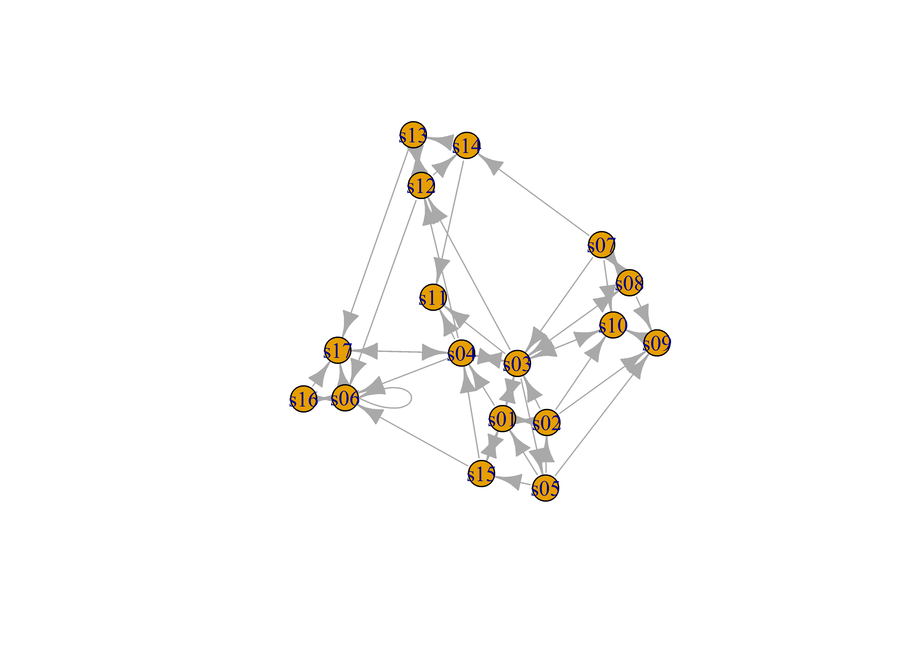
# Removing loops from the graph:
net <-
igraph::simplify(net, remove.multiple = F, remove.loops = T)
# Let's and reduce the arrow size and remove the labels:
plot(net, edge.arrow.size = .4, vertex.label = NA)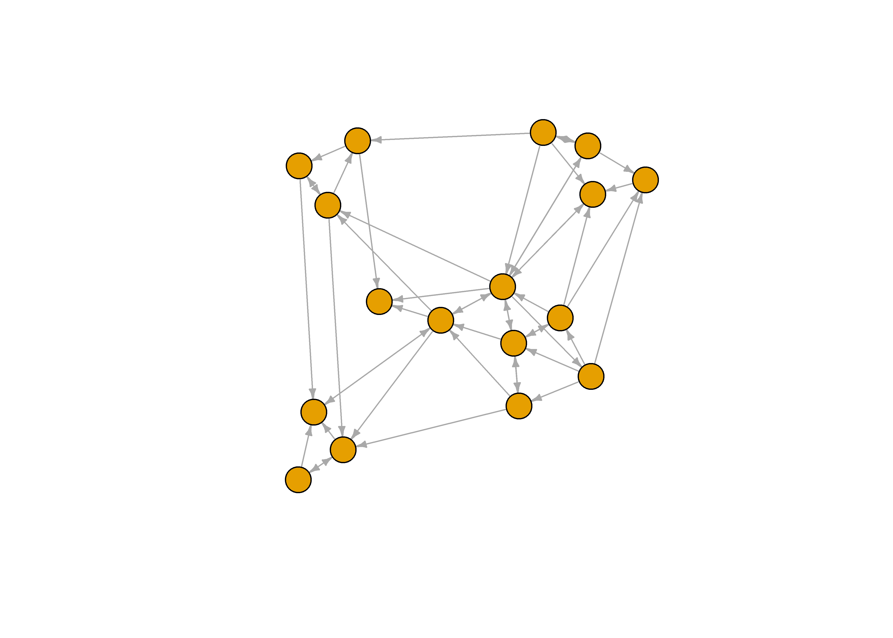
# Using tidygraph
tbl_graph(nodes, links, directed = TRUE) %>%
ggraph(., layout = "graphopt") +
geom_edge_link(
color = "grey",
end_cap = circle(0.2, "cm"),
start_cap = circle(0.2, "cm"),
# clears an area near the node
arrow = arrow(
type = "closed",
ends = "last",
length = unit(3, "mm")
)
) +
geom_node_point(size = 6, shape = 21, fill = "orange") +
geom_node_text(aes(label = id))Warning: Using the `size` aesthetic in this geom was deprecated in ggplot2 3.4.0.
ℹ Please use `linewidth` in the `default_aes` field and elsewhere instead.
# Removing loops from the graph:
# From the docs:
# convert() is a shorthand for performing both `morph` and `crystallise` along with extracting a single tbl_graph (defaults to the first). For morphs w(h)ere you know they only create a single graph, and you want to keep it, this is an easy way.
#
tbl_graph(nodes, links, directed = TRUE) %>%
convert(to_simple) %>%
ggraph(., layout = "graphopt") +
geom_edge_link(
color = "grey",
end_cap = circle(0.2, "cm"),
start_cap = circle(0.2, "cm"),
arrow = arrow(
type = "closed",
ends = "last",
length = unit(3, "mm")
)
) +
geom_node_point(size = 6, shape = 21, fill = "orange")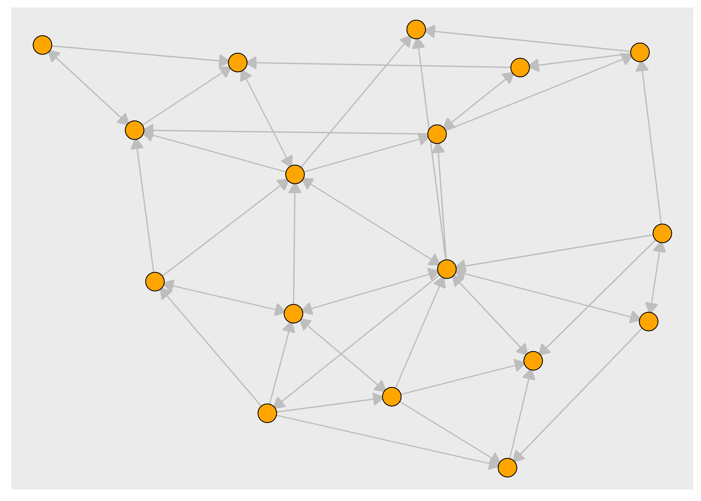
——-~~ DATASET 2: matrix ——–
# Read in the data:
nodes2 <- read.csv("./Dataset2-Media-User-Example-NODES.csv", header = T, as.is = T)
links2 <- read.csv("./Dataset2-Media-User-Example-EDGES.csv", header = T, row.names = 1)
# Examine the data:
head(nodes2) id media media.type media.name audience.size
1 s01 NYT 1 Newspaper 20
2 s02 WaPo 1 Newspaper 25
3 s03 WSJ 1 Newspaper 30
4 s04 USAT 1 Newspaper 32
5 s05 LATimes 1 Newspaper 20
6 s06 CNN 2 TV 56 U01 U02 U03 U04 U05 U06 U07 U08 U09 U10 U11 U12 U13 U14 U15 U16 U17 U18 U19
s01 1 1 1 0 0 0 0 0 0 0 0 0 0 0 0 0 0 0 0
s02 0 0 0 1 1 0 0 0 0 0 0 0 0 0 0 0 0 0 0
s03 0 0 0 0 0 1 1 1 1 0 0 0 0 0 0 0 0 0 0
s04 0 0 0 0 0 0 0 0 1 1 1 0 0 0 0 0 0 0 0
s05 0 0 0 0 0 0 0 0 0 0 1 1 1 0 0 0 0 0 0
s06 0 0 0 0 0 0 0 0 0 0 0 0 1 1 0 0 1 0 0
U20
s01 0
s02 1
s03 0
s04 0
s05 0
s06 0[1] 10 20[1] 30 5Note: What is a two-mode network? A network that as a node$type variable and can be a bipartite or a k-partite network as a result.
# Create an igraph network object from the two-mode matrix:
net2 <- igraph::graph_from_incidence_matrix(links2)
# To transform a one-mode network matrix into an igraph object,
# we would use graph_from_adjacency_matrix()
# A built-in vertex attribute 'type' shows which mode vertices belong to.
table(V(net2)$type)
FALSE TRUE
10 20 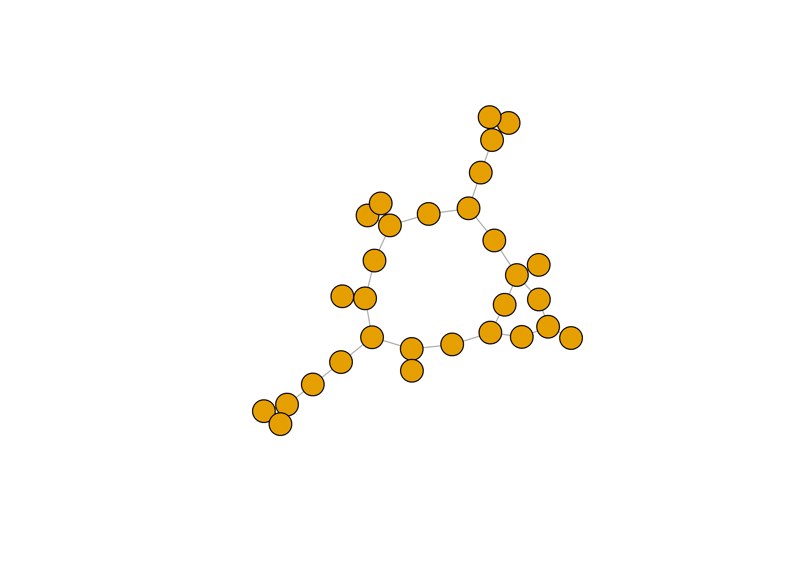
# using tidygraph
# For all objects that are not node and edge data_frames
# tidygraph uses `as_tbl_graph()`
#
graph <- as_tbl_graph(links2)
graph %>% activate(nodes) %>% as_tibble()# A tibble: 30 × 2
type name
<lgl> <chr>
1 FALSE s01
2 FALSE s02
3 FALSE s03
4 FALSE s04
5 FALSE s05
6 FALSE s06
7 FALSE s07
8 FALSE s08
9 FALSE s09
10 FALSE s10
# … with 20 more rows# A tibble: 31 × 3
from to weight
<int> <int> <dbl>
1 1 11 1
2 1 12 1
3 1 13 1
4 2 14 1
5 2 15 1
6 2 30 1
7 3 16 1
8 3 17 1
9 3 18 1
10 3 19 1
# … with 21 more rowsgraph %>%
ggraph(., layout = "graphopt") +
geom_edge_link(color = "grey") +
geom_node_point(fill = "orange",
shape = 21, size = 6,
color = "black")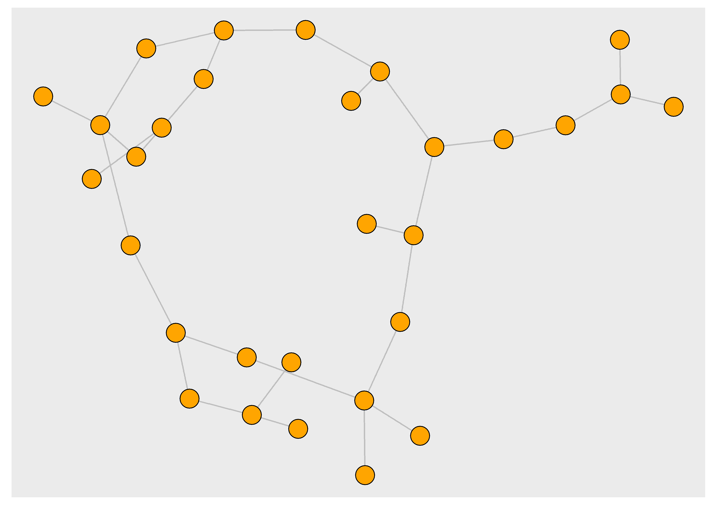
[1] "igraph"IGRAPH 9008ce1 UN-B 30 31 --
+ attr: type (v/l), name (v/c)
+ edges from 9008ce1 (vertex names):
[1] s01--U01 s01--U02 s01--U03 s02--U04 s02--U05 s02--U20 s03--U06 s03--U07
[9] s03--U08 s03--U09 s04--U09 s04--U10 s04--U11 s05--U11 s05--U12 s05--U13
[17] s06--U13 s06--U14 s06--U17 s07--U14 s07--U15 s07--U16 s08--U16 s08--U17
[25] s08--U18 s08--U19 s09--U06 s09--U19 s09--U20 s10--U01 s10--U11Note: The remaining attributes for the nodes ( in data frame nodes2) are not (yet) a part of the graph, either with igraph or with tidygraph.
3. Network plots in ‘igraph’
——~~ Plot parameters in igraph ——–
Check out the node options (starting with ‘vertex.’) and the edge options (starting with ‘edge.’).
We can set the node & edge options in two ways - one is to specify them in the plot() function, as we are doing below.
- Plot with curved edges (edge.curved = .1) and reduce arrow size:
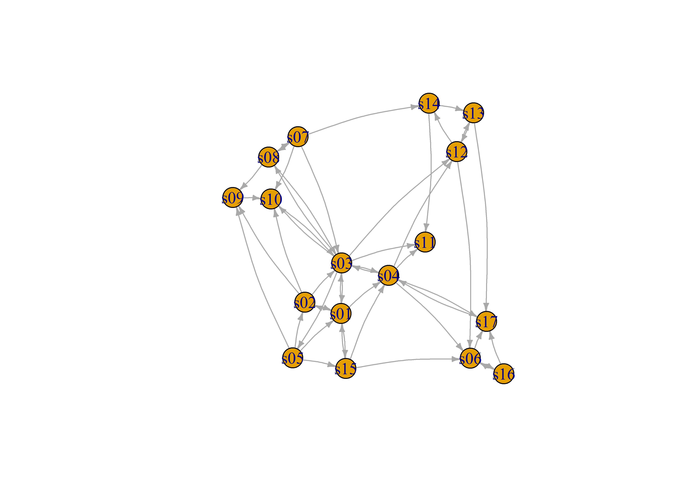
# A tbl_graph: 17 nodes and 49 edges
#
# A directed multigraph with 1 component
#
# Node Data: 17 × 5 (active)
id media media.type type.label audience.size
<chr> <chr> <int> <chr> <int>
1 s01 NY Times 1 Newspaper 20
2 s02 Washington Post 1 Newspaper 25
3 s03 Wall Street Journal 1 Newspaper 30
4 s04 USA Today 1 Newspaper 32
5 s05 LA Times 1 Newspaper 20
6 s06 New York Post 1 Newspaper 50
# … with 11 more rows
#
# Edge Data: 49 × 4
from to type weight
<int> <int> <chr> <int>
1 1 2 hyperlink 22
2 1 3 hyperlink 22
3 1 4 hyperlink 21
# … with 46 more rowsgraph %>% ggraph(., layout = "graphopt") +
geom_edge_arc(
color = "grey",
strength = 0.1,
end_cap = circle(.2, "cm"),
arrow = arrow(
type = "closed",
ends = "both",
length = unit(3, "mm")
)
) +
geom_node_point(
fill = "orange",
shape = 21,
size = 8,
color = "black"
) +
geom_node_text(aes(label = id))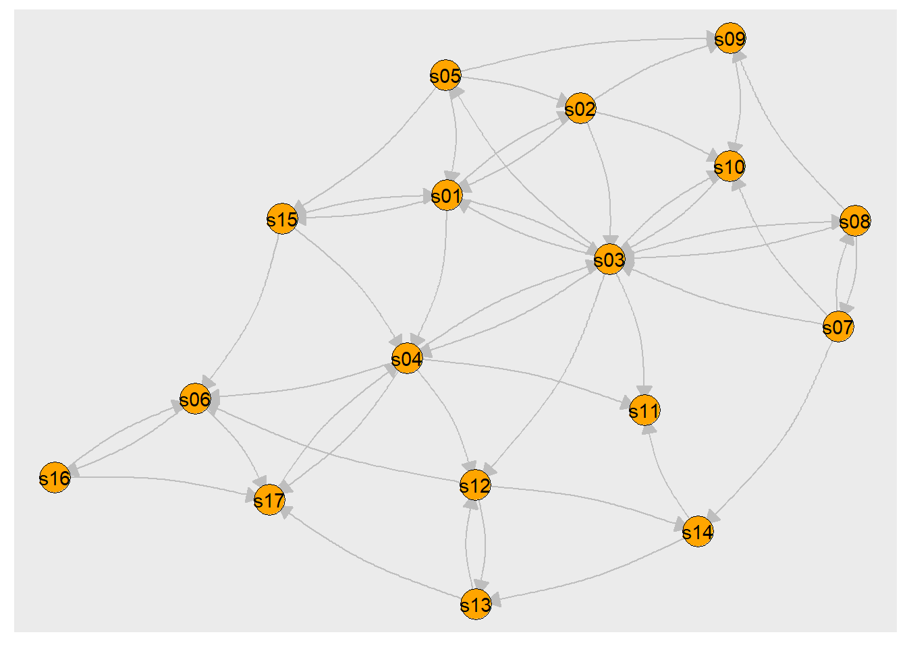
- Set node color to orange and the border color to hex 555555
- Replace the vertex label with the node names stored in “media”
plot(
net,
edge.arrow.size = .2,
edge.curved = 0,
vertex.color = "orange",
vertex.frame.color = "#555555",
vertex.label = V(net)$media,
vertex.label.color = "black",
vertex.label.cex = .7
)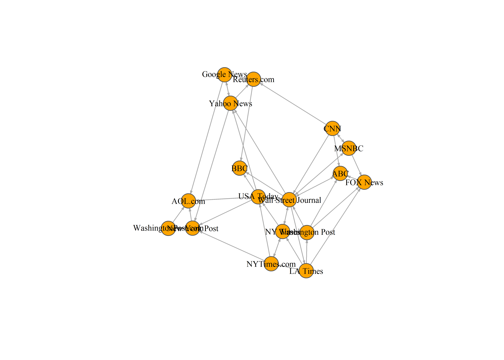
# Using tidygraph
#graph <- tbl_graph(nodes, links, directed = TRUE)
#graph
graph %>%
ggraph(., layout = "gem") +
geom_edge_link(
color = "grey",
end_cap = circle(.3, "cm"),
arrow = arrow(
type = "closed",
ends = "both",
length = unit(1, "mm")
)
) +
geom_node_point(
fill = "orange",
shape = 21,
size = 6,
color = "#555555"
) +
geom_node_text(aes(label = media))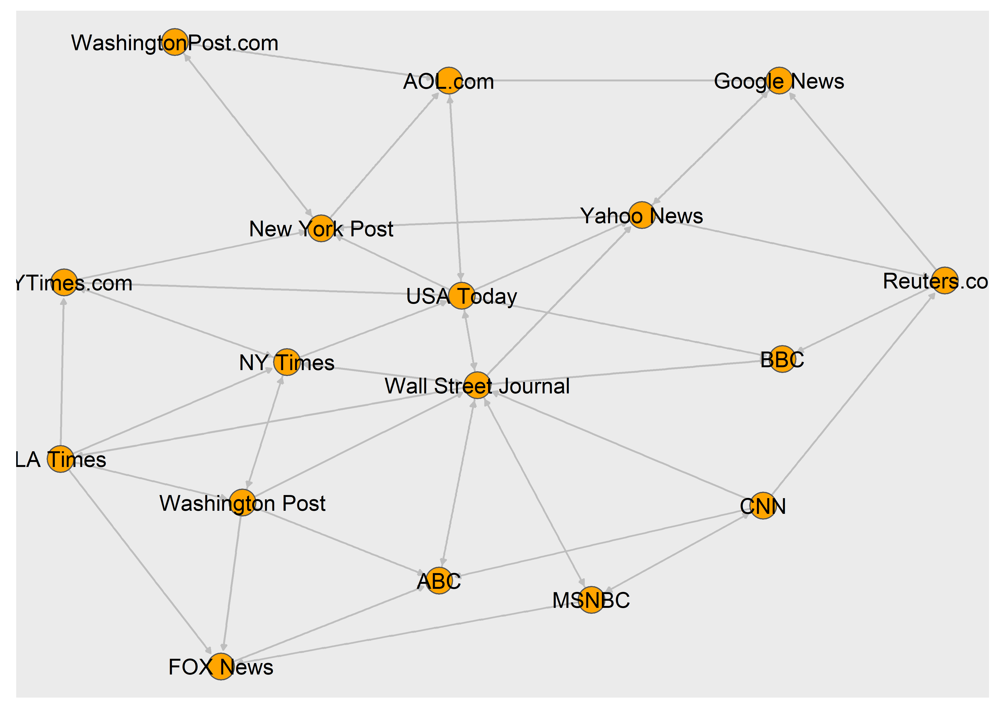
The second way to set attributes is to add them to the igraph object.
- Generate colors based on media type:

- Compute node degrees (#links) and use that to set node size:
deg <- igraph::degree(net, mode = "all")
V(net)$size <- deg*3
# Alternatively, we can set node size based on audience size:
V(net)$size <- V(net)$audience.size*0.7
V(net)$size [1] 14.0 17.5 21.0 22.4 14.0 35.0 39.2 23.8 42.0 16.1 23.8 23.1 16.1 8.4 16.8
[16] 19.6 23.1# The labels are currently node IDs.
# Setting them to NA will render no labels:
V(net)$label.color <- "black"
V(net)$label <- NA
# Set edge width based on weight:
E(net)$width <- E(net)$weight/6
#change arrow size and edge color:
E(net)$arrow.size <- .2
E(net)$edge.color <- "gray80"
# We can even set the network layout:
graph_attr(net, "layout") <- layout_with_lgl
plot(net)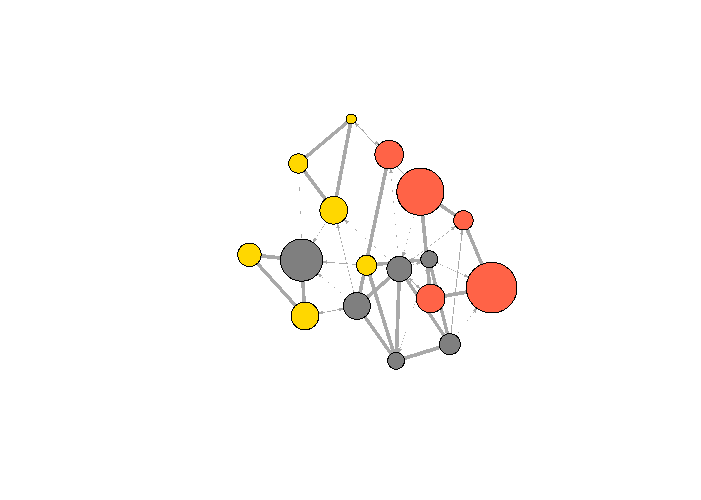
# Using tidygraph
# graph <- tbl_graph(nodes, links, directed = TRUE)
# graph
graph %>%
activate(nodes) %>%
mutate(size = centrality_degree()) %>%
ggraph(., layout = "lgl") +
geom_edge_link(
aes(width = weight),
color = "grey80",
end_cap = circle(.2, "cm"),
arrow = arrow(
type = "closed",
ends = "last",
length = unit(1, "mm")
)
) +
geom_node_point(aes(fill = type.label, size = size),
shape = 21,
color = "black") +
scale_fill_manual(name = "Media Type",
values = c("grey50", "gold", "tomato")) +
scale_edge_width(range = c(0.2, 1.5), guide = "none") +
scale_size_continuous("Degree", range = c(2, 16)) +
guides(fill = guide_legend(title = "Media Type",
override.aes = list(pch = 21, size = 4)))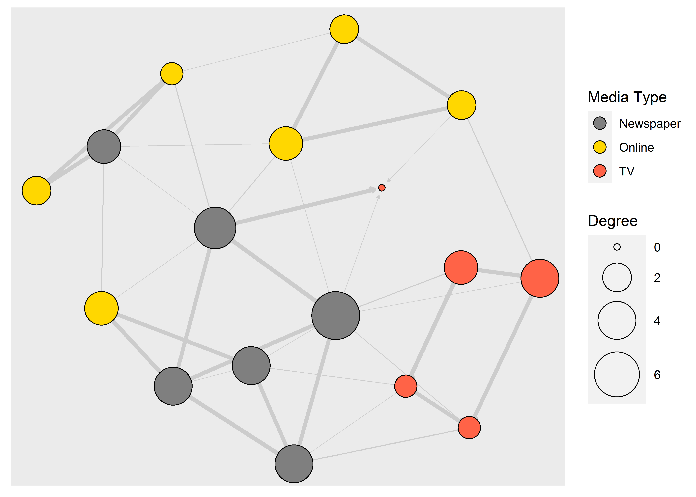
We can also override the attributes explicitly in the plot:
We can also add a legend explaining the meaning of the colors we used:
plot(net)
legend(x = -2.1, y = -1.1,
c("Newspaper","Television", "Online News"),
pch = 21,col = "#777777",
pt.bg = colrs, pt.cex = 2.5, bty = "n", ncol = 1)
Sometimes, especially with semantic networks, we may be interested in plotting only the labels of the nodes:
plot(net, vertex.shape = "none", vertex.label = V(net)$media,
vertex.label.font = 2, vertex.label.color = "gray40",
vertex.label.cex = .7, edge.color = "gray85")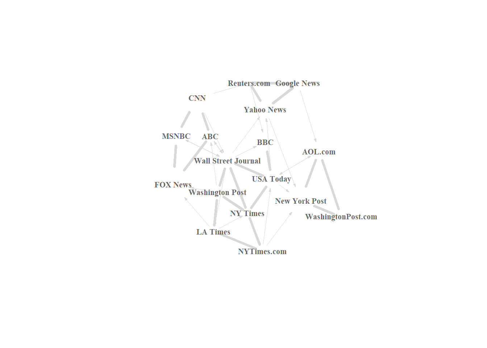
#using tidygraph
ggraph(net, layout = "gem") +
geom_edge_link(color = "grey80", width = 2,
end_cap = circle(0.5,"cm"),
start_cap = circle(0.5, "cm")) +
geom_node_text(aes(label = media))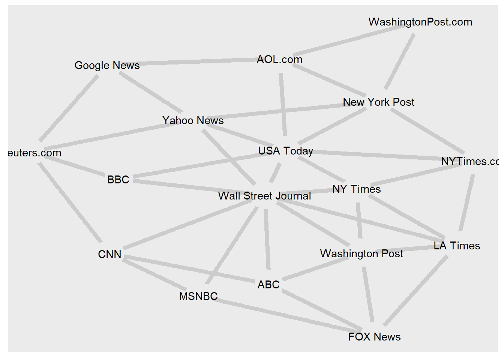
Let’s color the edges of the graph based on their source node color. We’ll get the starting node for each edge with ends().
Note: Edge attribute is being set by start node.
edge.start <- ends(net, es = E(net), names = F)[,1]
edge.col <- V(net)$color[edge.start] # How simple this is !!!
# The three colors are recycled
#
plot(net, edge.color = edge.col, edge.curved = .4)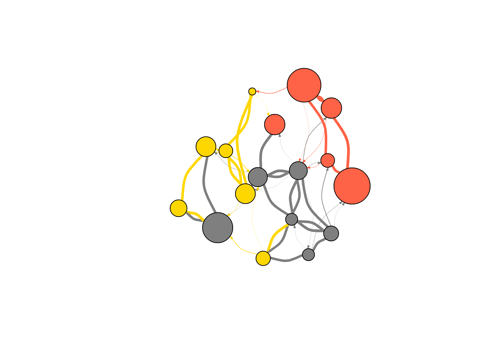
NOTE: The source node colour has been set using the media.type, which is a node attribute. Node attributes are not typically accessible to edges. So we need to build a combo data frame using dplyr, so that edges can use this node attribute. ( There may be other ways…)
# Using tidygraph
# Make a "combo" data frame of nodes *and* edges with left_join()
# Join by `from` so that type.label is based on from = edge.start
links %>%
left_join(., nodes, by = c("from" = "id")) %>%
tbl_graph(edges = ., nodes = nodes) %>%
mutate(size = centrality_degree()) %>%
ggraph(., layout = "lgl") +
geom_edge_arc(aes(color = type.label,
width = weight),
strength = 0.3) +
geom_node_point(aes(fill = type.label,
# type.label is now available as edge attribute
size = size),
shape = 21,
color = "black") +
scale_fill_manual(
name = "Media Type",
values = c("grey50", "gold", "tomato"),
guide = "legend"
) +
scale_edge_color_manual(name = "Source Type",
values = c("grey80", "gold", "tomato")) +
scale_edge_width(range = c(0.2, 1.5), guide = "none") +
scale_size_continuous("Degree", range = c(2, 16)) +
# not "limits"!
guides(fill = guide_legend(override.aes = list(pch = 21,
size = 4)))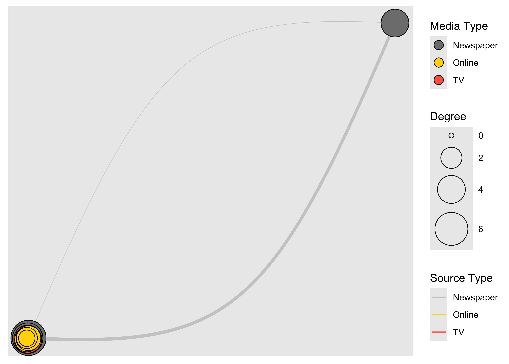
——-~~ Network Layouts in ‘igraph’ ——–
Network layouts are algorithms that return coordinates for each node in a network.
Let’s generate a slightly larger 100-node graph using a preferential attachment model (Barabasi-Albert).
net.bg <- sample_pa(n = 100, power = 1.2)
V(net.bg)$size <- 8
V(net.bg)$frame.color <- "white"
V(net.bg)$color <- "orange"
V(net.bg)$label <- ""
E(net.bg)$arrow.mode <- 0
plot(net.bg)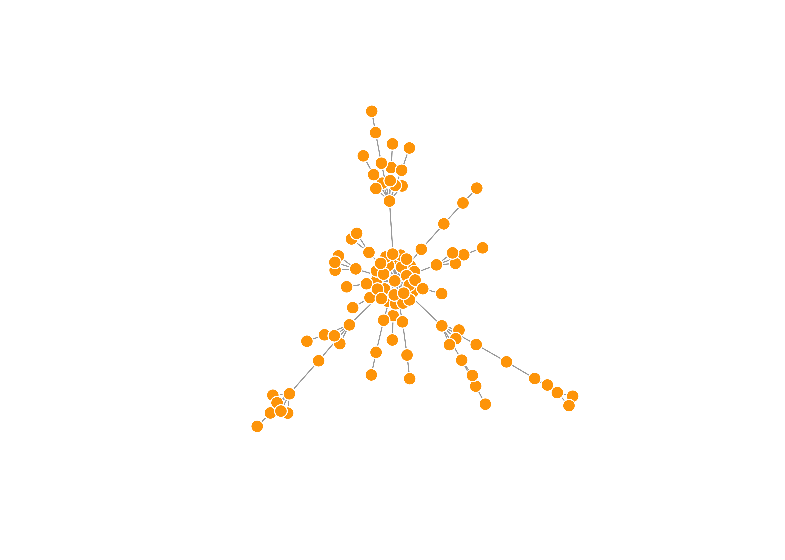
# Using tidygraph
graph <- play_barabasi_albert(n = 100, power = 1.2)
graph %>%
ggraph(., layout = "graphopt") +
geom_edge_link(color = "grey") +
geom_node_point(color = "orange", size = 4) +
theme_graph()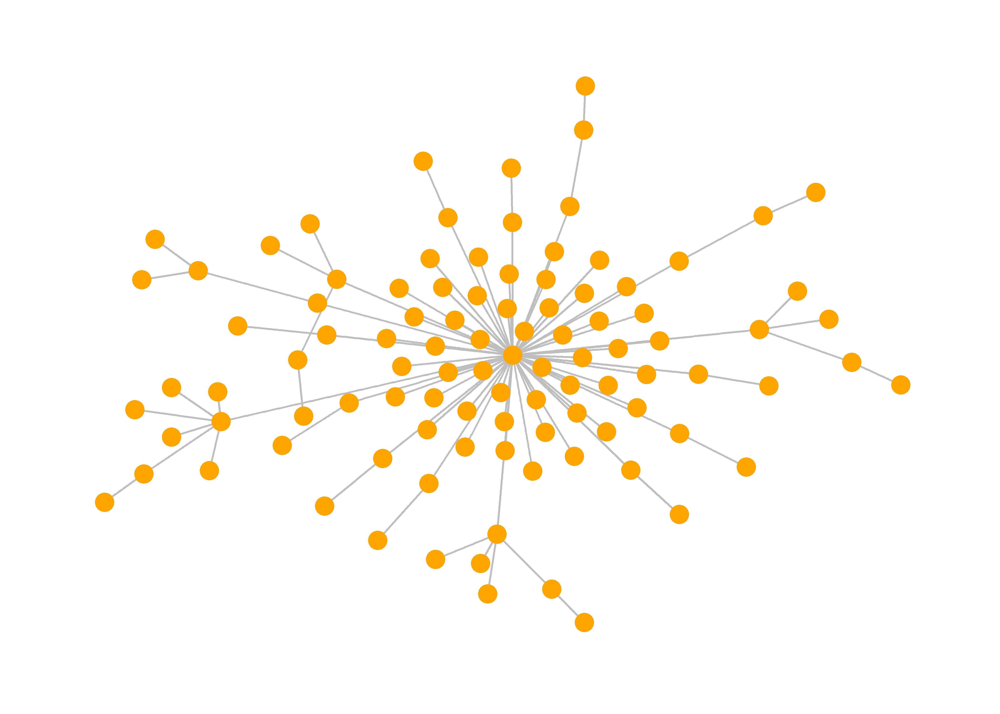
Now let’s plot this network using the layouts available in igraph. You can set the layout in the plot function:
Or calculate the vertex coordinates in advance:
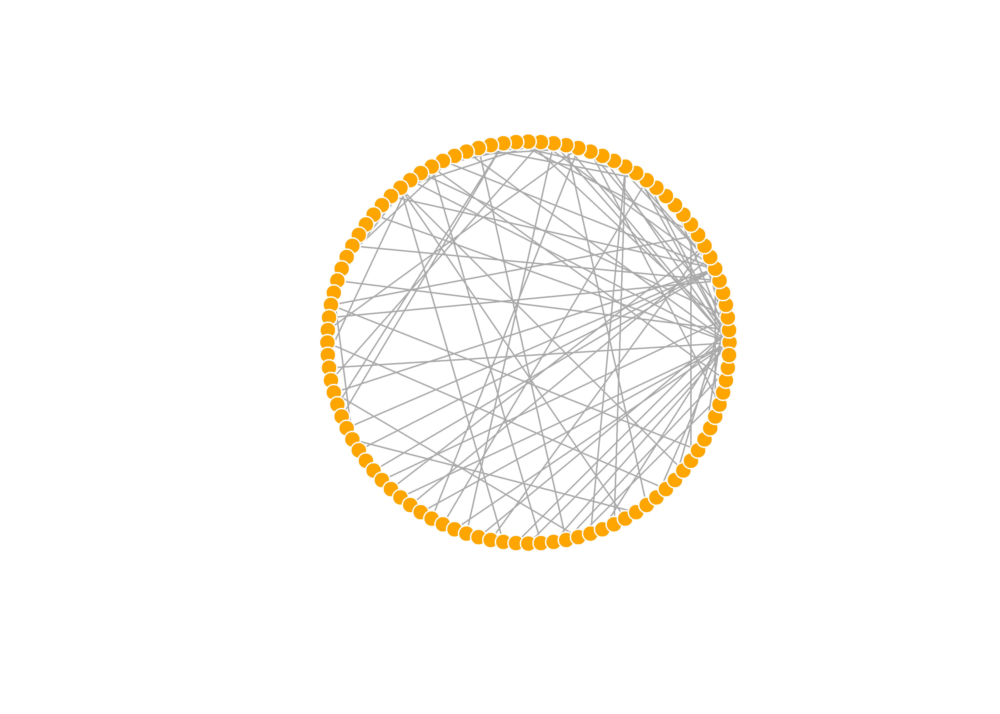
# Using tidygraph
# graph <- play_barabasi_albert(n = 100, power = 1.2)
graph %>% ggraph(., layout = "circle") +
geom_edge_link(color = "grey") +
geom_node_point(color = "orange", size = 2) +
theme_graph() +
theme(aspect.ratio = 1)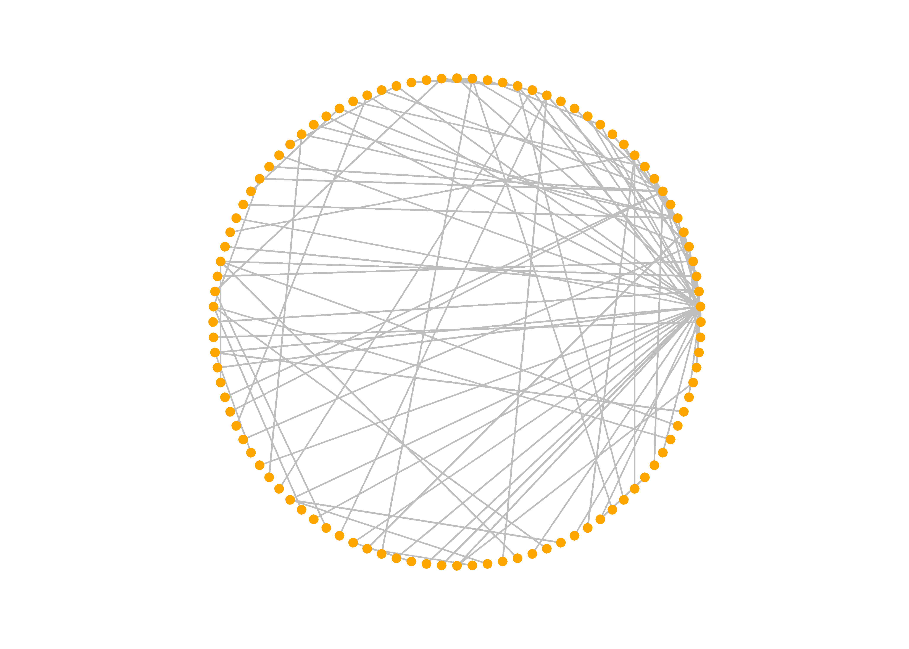
l is simply a matrix of x,y coordinates (N x 2) for the N nodes in the graph. You can generate your own:
[,1] [,2]
[1,] 1.000000e+00 0.000000e+00
[2,] 9.980267e-01 6.279052e-02
[3,] 9.921147e-01 1.253332e-01
[4,] 9.822873e-01 1.873813e-01
[5,] 9.685832e-01 2.486899e-01
[6,] 9.510565e-01 3.090170e-01
[7,] 9.297765e-01 3.681246e-01
[8,] 9.048271e-01 4.257793e-01
[9,] 8.763067e-01 4.817537e-01
[10,] 8.443279e-01 5.358268e-01
[11,] 8.090170e-01 5.877853e-01
[12,] 7.705132e-01 6.374240e-01
[13,] 7.289686e-01 6.845471e-01
[14,] 6.845471e-01 7.289686e-01
[15,] 6.374240e-01 7.705132e-01
[16,] 5.877853e-01 8.090170e-01
[17,] 5.358268e-01 8.443279e-01
[18,] 4.817537e-01 8.763067e-01
[19,] 4.257793e-01 9.048271e-01
[20,] 3.681246e-01 9.297765e-01
[21,] 3.090170e-01 9.510565e-01
[22,] 2.486899e-01 9.685832e-01
[23,] 1.873813e-01 9.822873e-01
[24,] 1.253332e-01 9.921147e-01
[25,] 6.279052e-02 9.980267e-01
[26,] -1.608143e-16 1.000000e+00
[27,] -6.279052e-02 9.980267e-01
[28,] -1.253332e-01 9.921147e-01
[29,] -1.873813e-01 9.822873e-01
[30,] -2.486899e-01 9.685832e-01
[31,] -3.090170e-01 9.510565e-01
[32,] -3.681246e-01 9.297765e-01
[33,] -4.257793e-01 9.048271e-01
[34,] -4.817537e-01 8.763067e-01
[35,] -5.358268e-01 8.443279e-01
[36,] -5.877853e-01 8.090170e-01
[37,] -6.374240e-01 7.705132e-01
[38,] -6.845471e-01 7.289686e-01
[39,] -7.289686e-01 6.845471e-01
[40,] -7.705132e-01 6.374240e-01
[41,] -8.090170e-01 5.877853e-01
[42,] -8.443279e-01 5.358268e-01
[43,] -8.763067e-01 4.817537e-01
[44,] -9.048271e-01 4.257793e-01
[45,] -9.297765e-01 3.681246e-01
[46,] -9.510565e-01 3.090170e-01
[47,] -9.685832e-01 2.486899e-01
[48,] -9.822873e-01 1.873813e-01
[49,] -9.921147e-01 1.253332e-01
[50,] -9.980267e-01 6.279052e-02
[51,] -1.000000e+00 -3.216286e-16
[52,] -9.980267e-01 -6.279052e-02
[53,] -9.921147e-01 -1.253332e-01
[54,] -9.822873e-01 -1.873813e-01
[55,] -9.685832e-01 -2.486899e-01
[56,] -9.510565e-01 -3.090170e-01
[57,] -9.297765e-01 -3.681246e-01
[58,] -9.048271e-01 -4.257793e-01
[59,] -8.763067e-01 -4.817537e-01
[60,] -8.443279e-01 -5.358268e-01
[61,] -8.090170e-01 -5.877853e-01
[62,] -7.705132e-01 -6.374240e-01
[63,] -7.289686e-01 -6.845471e-01
[64,] -6.845471e-01 -7.289686e-01
[65,] -6.374240e-01 -7.705132e-01
[66,] -5.877853e-01 -8.090170e-01
[67,] -5.358268e-01 -8.443279e-01
[68,] -4.817537e-01 -8.763067e-01
[69,] -4.257793e-01 -9.048271e-01
[70,] -3.681246e-01 -9.297765e-01
[71,] -3.090170e-01 -9.510565e-01
[72,] -2.486899e-01 -9.685832e-01
[73,] -1.873813e-01 -9.822873e-01
[74,] -1.253332e-01 -9.921147e-01
[75,] -6.279052e-02 -9.980267e-01
[76,] -1.836910e-16 -1.000000e+00
[77,] 6.279052e-02 -9.980267e-01
[78,] 1.253332e-01 -9.921147e-01
[79,] 1.873813e-01 -9.822873e-01
[80,] 2.486899e-01 -9.685832e-01
[81,] 3.090170e-01 -9.510565e-01
[82,] 3.681246e-01 -9.297765e-01
[83,] 4.257793e-01 -9.048271e-01
[84,] 4.817537e-01 -8.763067e-01
[85,] 5.358268e-01 -8.443279e-01
[86,] 5.877853e-01 -8.090170e-01
[87,] 6.374240e-01 -7.705132e-01
[88,] 6.845471e-01 -7.289686e-01
[89,] 7.289686e-01 -6.845471e-01
[90,] 7.705132e-01 -6.374240e-01
[91,] 8.090170e-01 -5.877853e-01
[92,] 8.443279e-01 -5.358268e-01
[93,] 8.763067e-01 -4.817537e-01
[94,] 9.048271e-01 -4.257793e-01
[95,] 9.297765e-01 -3.681246e-01
[96,] 9.510565e-01 -3.090170e-01
[97,] 9.685832e-01 -2.486899e-01
[98,] 9.822873e-01 -1.873813e-01
[99,] 9.921147e-01 -1.253332e-01
[100,] 9.980267e-01 -6.279052e-02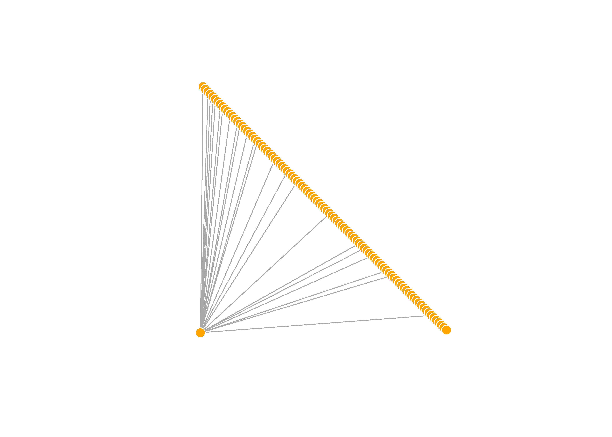
# Using tidygraph
# graph <- play_barabasi_albert(n = 100, power = 1.2)
graph %>% ggraph(., layout = l) +
geom_edge_link(color = "grey") +
geom_node_point(color = "orange", size = 2)+
theme_graph()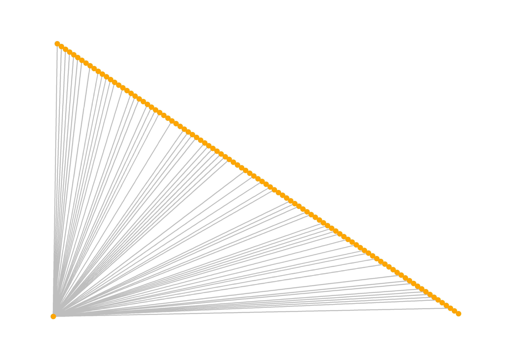
This layout is just an example and not very helpful - thankfully igraph has a number of built-in layouts, including:
- Randomly placed vertices

# Using tidygraph
# graph <- play_barabasi_albert(n = 100, power = 1.2)
graph %>% ggraph(., layout = layout_randomly(.)) +
geom_edge_link0(colour = "grey") +
geom_node_point(colour = "orange", size = 4)
- Circle layout

# Using tidygraph
# graph <- play_barabasi_albert(n = 100, power = 1.2)
graph %>% ggraph(., layout = layout_in_circle(.)) +
geom_edge_link0(colour = "grey") +
geom_node_point(colour = "orange") +
theme(aspect.ratio = 1)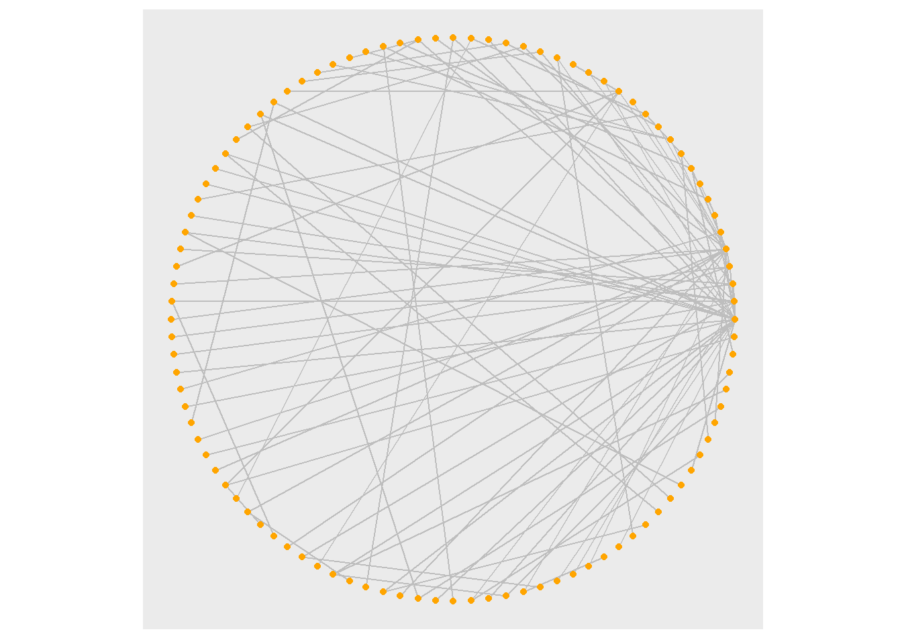
- 3D sphere layout
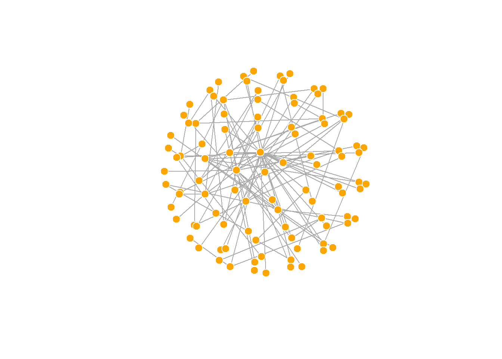
# Using tidygraph
# graph <- play_barabasi_albert(n = 100, power = 1.2)
graph %>% ggraph(., layout = layout_on_sphere(.)) +
geom_edge_link0(colour = "grey") +
geom_node_point(colour = "orange")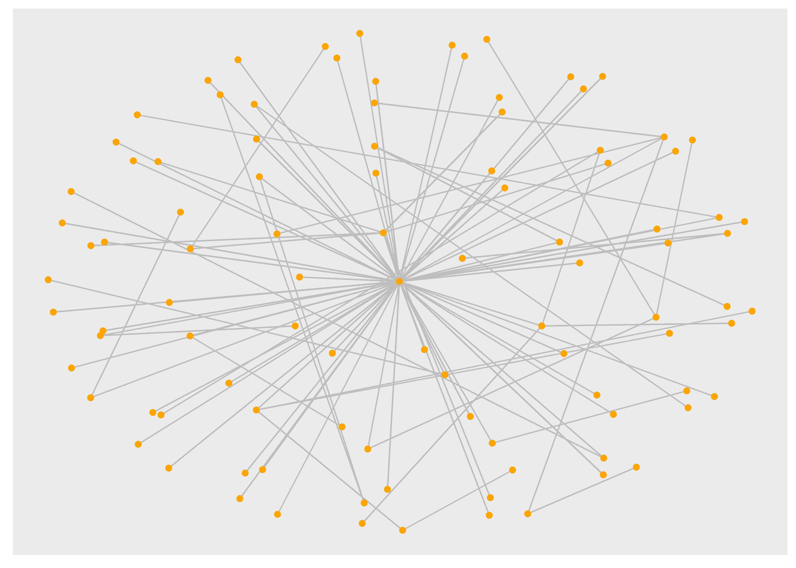
- The Fruchterman-Reingold force-directed algorithm: Nice but slow, most often used in graphs smaller than ~1000 vertices.
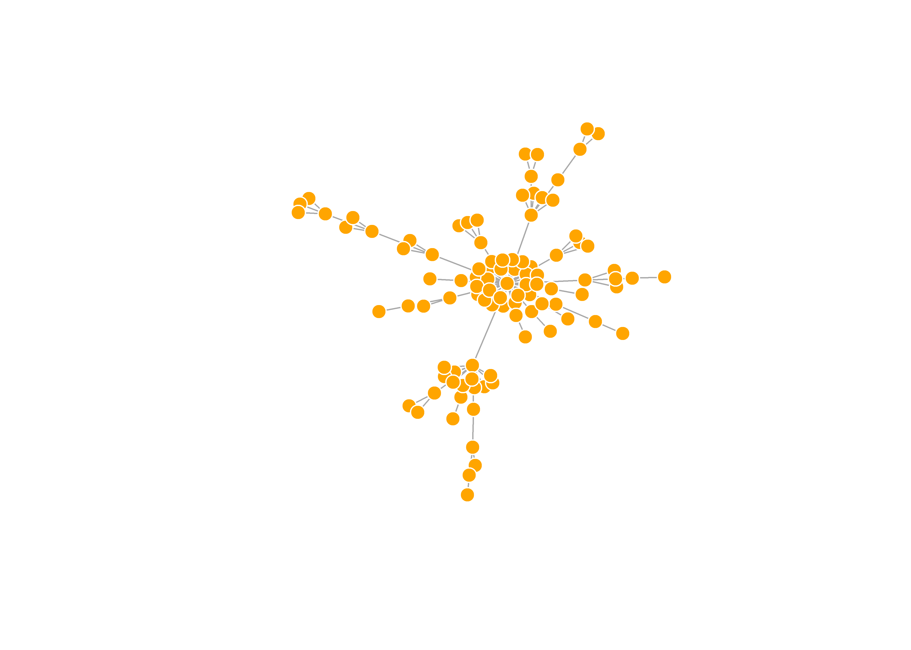
# Using tidygraph
# graph <- play_barabasi_albert(n = 100, power = 1.2)
graph %>% ggraph(., layout = layout_with_fr(.)) +
geom_edge_link0(colour = "grey") +
geom_node_point(colour = "orange")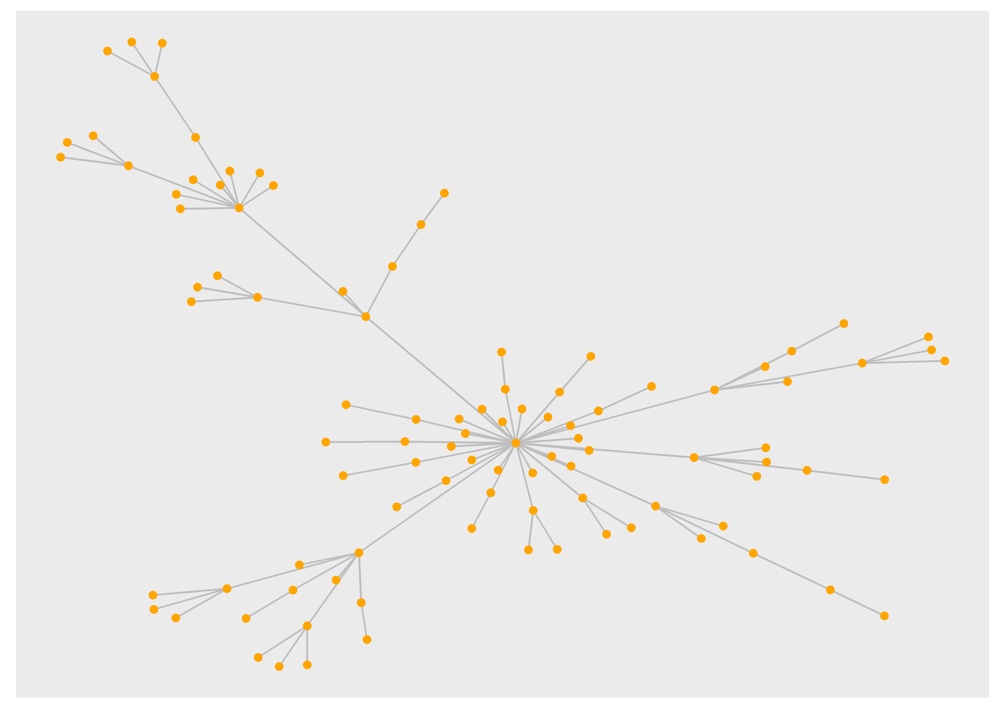
You will also notice that the F-R layout is not deterministic - different runs will result in slightly different configurations. Saving the layout in l allows us to get the exact same result multiple times.
par(mfrow = c(2,2), mar = c(1,1,1,1))
plot(net.bg, layout = layout_with_fr)
plot(net.bg, layout = layout_with_fr)
plot(net.bg, layout = l)
plot(net.bg, layout = l)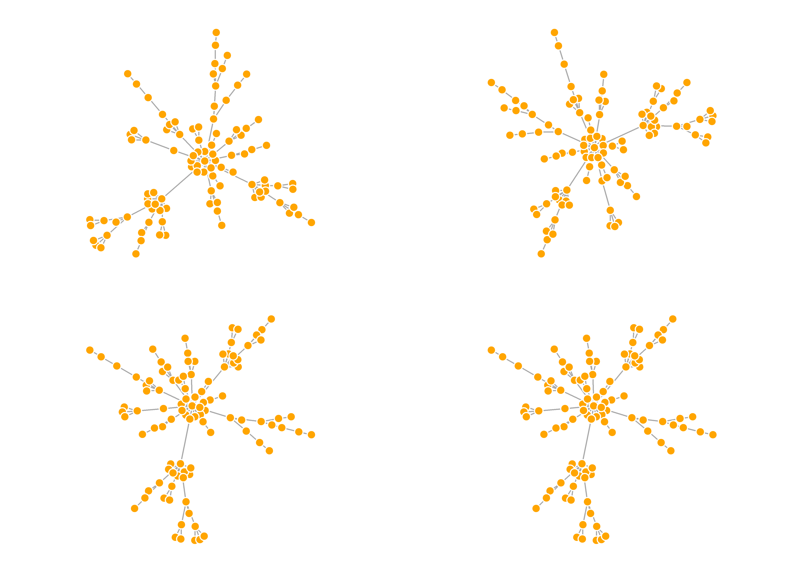
By default, the coordinates of the plots are rescaled to the [-1,1] interval for both x and y. You can change that with the parameter rescale = FALSE and rescale your plot manually by multiplying the coordinates by a scalar. You can use norm_coords to normalize the plot with the boundaries you want. This way you can create more compact or spread out layout versions.
#Get the layout coordinates:
l <- layout_with_fr(net.bg)
# Normalize them so that they are in the -1, 1 interval:
l <- norm_coords(l, ymin = -1, ymax = 1, xmin = -1, xmax = 1)
par(mfrow = c(2,2), mar = c(0,0,0,0))
plot(net.bg, rescale = F, layout = l*0.4)
plot(net.bg, rescale = F, layout = l*0.8)
plot(net.bg, rescale = F, layout = l*1.2)
plot(net.bg, rescale = F, layout = l*1.6)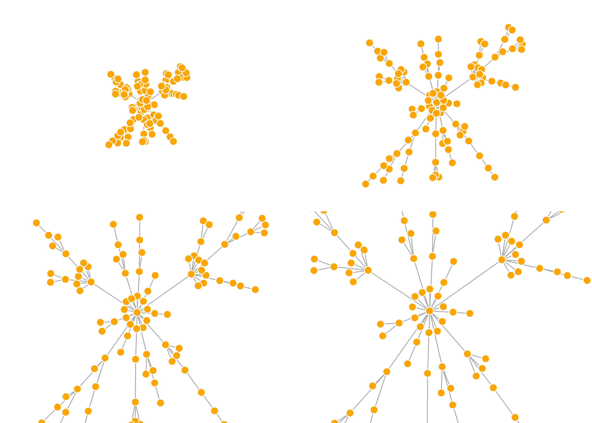
Another popular force-directed algorithm that produces nice results for connected graphs is Kamada Kawai. Like Fruchterman Reingold, it attempts to minimize the energy in a spring system.
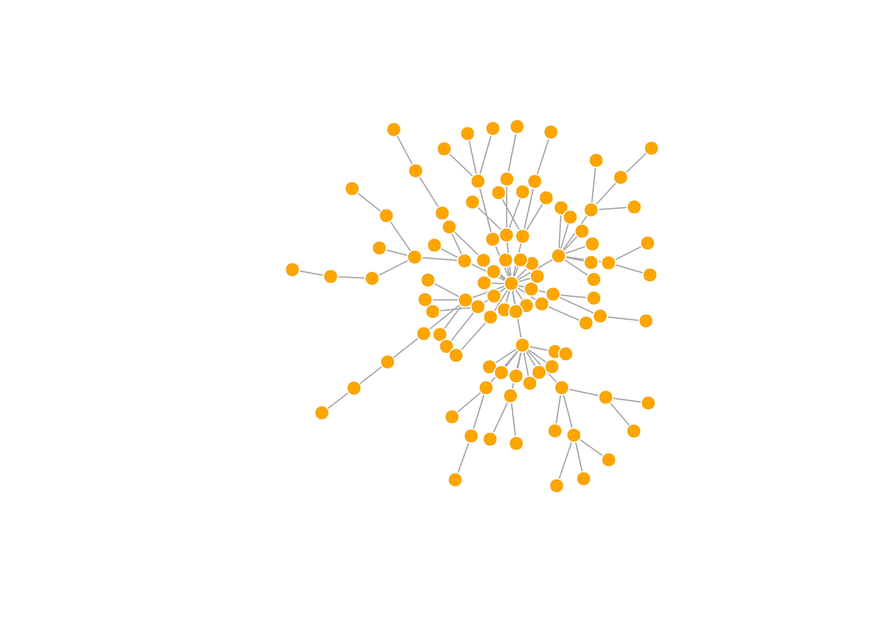
# Using tidygraph
# graph <- play_barabasi_albert(n = 100, power = 1.2)
graph %>% ggraph(., layout = layout_with_kk(.)) +
geom_edge_link0(colour = "grey") +
geom_node_point(colour = "orange", size = 4)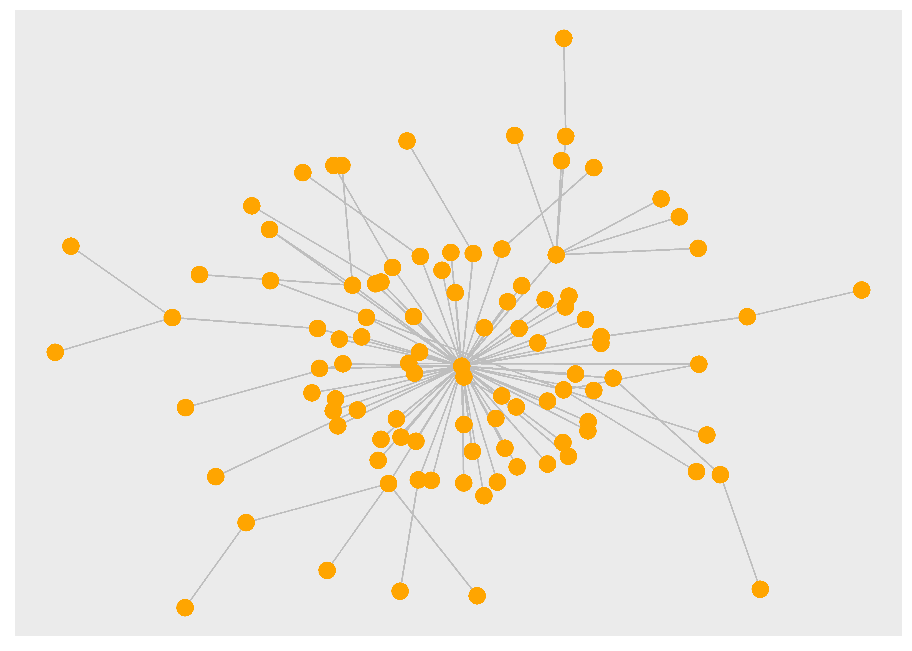
The MDS (multidimensional scaling) algorithm tries to place nodes based on some measure of similarity or distance between them. More similar/less distant nodes are placed closer to each other. By default, the measure used is based on the shortest paths between nodes in the network. That can be changed with the dist parameter.
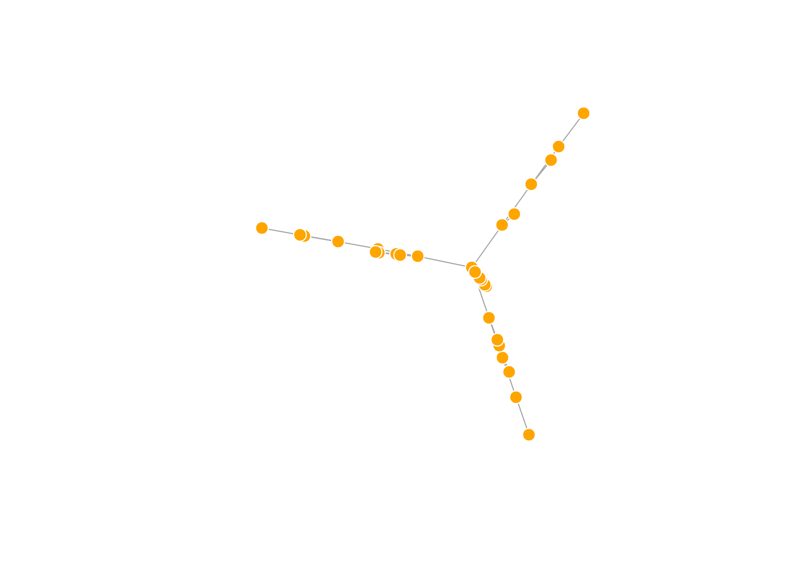
# Using tidygraph
# graph <- play_barabasi_albert(n = 100, power = 1.2)
graph %>% ggraph(., layout = layout_with_mds(.)) +
geom_edge_link0(colour = "grey") +
geom_node_point(colour = "orange", size = 4)
The LGL algorithm is for large connected graphs. Here you can specify a root- the node that will be placed in the middle of the layout.
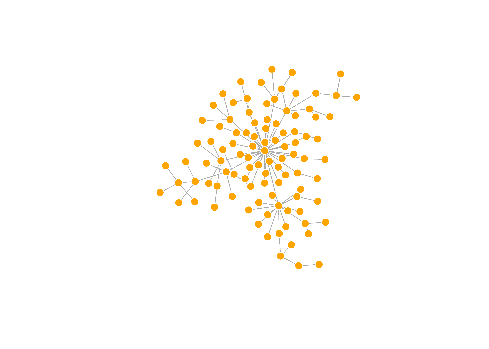
# Using tidygraph
# graph <- play_barabasi_albert(n = 100, power = 1.2)
graph %>% ggraph(., layout = layout_with_lgl(.)) +
geom_edge_link0(colour = "grey") +
geom_node_point(colour = "orange", size = 4)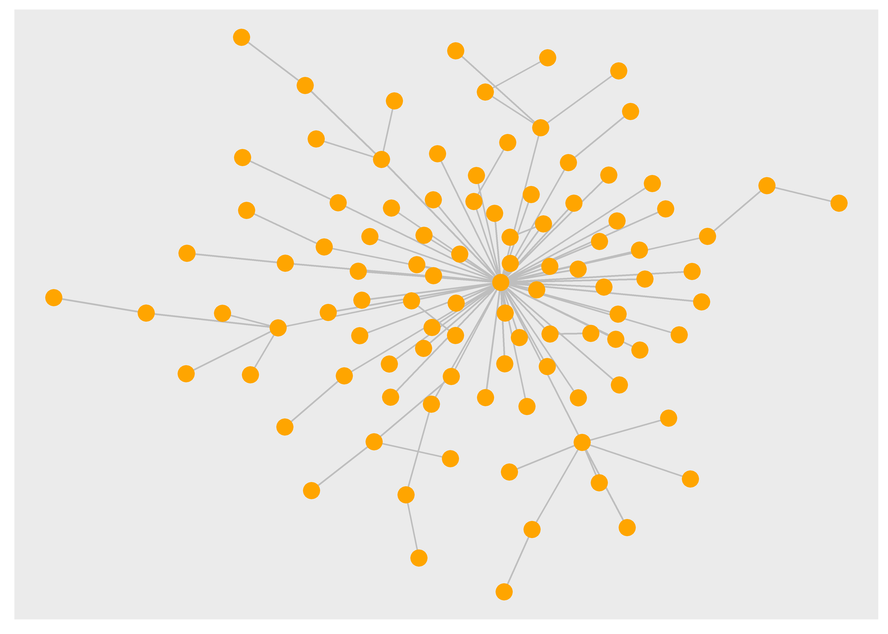
By default, igraph uses a layout called layout_nicely which selects an appropriate layout algorithm based on the properties of the graph. Check out all available layouts in igraph:
layouts <- grep("^layout_", ls("package:igraph"), value = TRUE)[-1]
# Remove layouts that do not apply to our graph.
layouts <- layouts[!grepl("bipartite|merge|norm|sugiyama|tree", layouts)]
par(mfrow = c(3,3), mar = c(1,1,1,1))
for (layout in layouts) {
print(layout)
l <- do.call(layout, list(net))
plot(net, edge.arrow.mode = 0, layout = l, main = layout) }[1] "layout_as_star"[1] "layout_components"[1] "layout_in_circle"[1] "layout_nicely"[1] "layout_on_grid"[1] "layout_on_sphere"[1] "layout_randomly"[1] "layout_with_dh"[1] "layout_with_drl"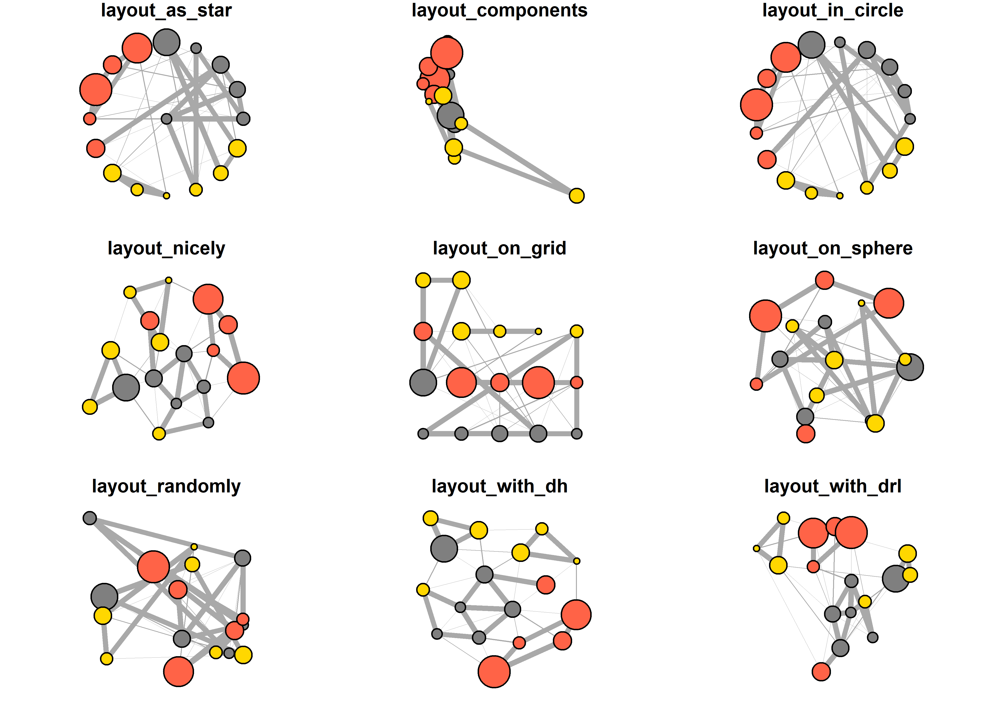
[1] "layout_with_fr"[1] "layout_with_gem"[1] "layout_with_graphopt"[1] "layout_with_kk"[1] "layout_with_lgl"[1] "layout_with_mds"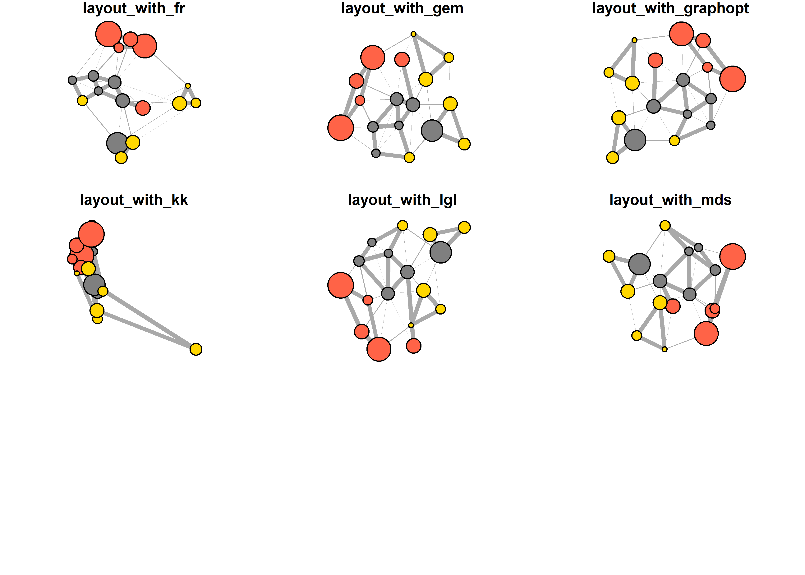
——-~~ Highlighting aspects of the network ——–
Notice that our network plot is still not too helpful. We can identify the type and size of nodes, but cannot see much about the structure since the links we’re examining are so dense. One way to approach this is to see if we can sparsify the network.

There are more sophisticated ways to extract the key edges, but for the purposes of this exercise we’ll only keep ones that have weight higher than the mean for the network. We can delete edges using delete_edges(net, edges) (or, by the way, add edges with add_edges(net, edges) )
cut.off <- mean(links$weight)
net.sp <- delete_edges(net, E(net)[weight<cut.off])
plot(net.sp, layout = layout_with_kk)
# A tbl_graph: 17 nodes and 49 edges
#
# A directed multigraph with 1 component
#
# Node Data: 17 × 5 (active)
id media media.type type.label audience.size
<chr> <chr> <int> <chr> <int>
1 s01 NY Times 1 Newspaper 20
2 s02 Washington Post 1 Newspaper 25
3 s03 Wall Street Journal 1 Newspaper 30
4 s04 USA Today 1 Newspaper 32
5 s05 LA Times 1 Newspaper 20
6 s06 New York Post 1 Newspaper 50
# … with 11 more rows
#
# Edge Data: 49 × 4
from to type weight
<int> <int> <chr> <int>
1 1 2 hyperlink 22
2 1 3 hyperlink 22
3 1 4 hyperlink 21
# … with 46 more rowsgraph %>%
activate(nodes) %>%
mutate(size = centrality_degree()) %>%
# New stuff here
activate(edges) %>%
filter(weight >= mean(weight)) %>%
ggraph(., layout = "kk") +
geom_edge_link(
aes(width = weight),
color = "grey80",
end_cap = circle(.2, "cm"),
arrow = arrow(
type = "closed",
ends = "last",
length = unit(1, "mm")
)) +
geom_node_point(aes(fill = type.label,
size = size),
shape = 21,
color = "black") +
scale_fill_manual(
name = "Media Type",
values = c("grey50", "gold", "tomato"),
guide = "legend") +
scale_edge_width(range = c(0.2, 1.5), guide = "none") +
scale_size_continuous("Degree", range = c(2, 16)) +
# not "limits"!
guides(fill = guide_legend(override.aes = list(pch = 21,
size = 4)))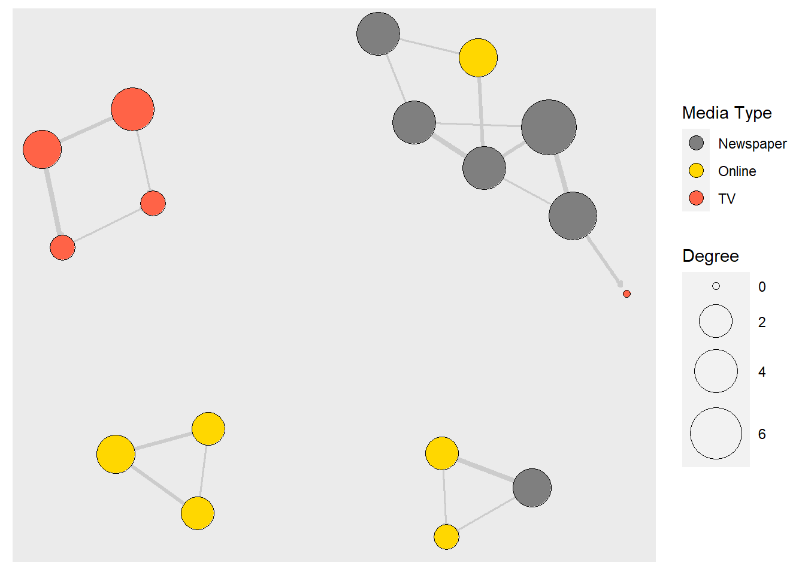
Another way to think about this is to plot the two tie types (hyperlinks and mentions) separately. We will do that in section 5 of this tutorial: Plotting multiplex networks.
Community Detection
We can also try to make the network map more useful by showing the communities within it.
#Community detection (by optimizing modularity over partitions):
clp <- cluster_optimal(net)
class(clp)[1] "communities"IGRAPH clustering optimal, groups: 4, mod: 0.6
+ groups:
$`1`
[1] "s01" "s02" "s03" "s04" "s05" "s11" "s15"
$`2`
[1] "s06" "s16" "s17"
$`3`
[1] "s07" "s08" "s09" "s10"
$`4`
+ ... omitted several groups/vertices [1] 1 1 1 1 1 2 3 3 3 3 1 4 4 4 1 2 2Community detection returns an object of class “communities” which igraph knows how to plot:

To plot communities using the tidygraph approach, I have taken help from the ggforce package. This package allows drawing of hull shapes around specific sets of points. Here goes:
# Using tidygraph
# And ggforce
library(ggforce)
graph <- tbl_graph(nodes, links, directed = TRUE)
graph <- graph %>%
activate(nodes) %>%
mutate(size = centrality_degree()) %>%
# new stuff
mutate(community = as.factor(tidygraph::group_optimal()))
# Need to pre-compute layout coordinates to pass to ggforce
# To create a hull around each community
layout_go <- layout_with_graphopt(graph)
ggraph(graph, layout = layout_go) +
# new stuff
# need to pass x and y coordinates of nodes to `geom_mark_hull`
# Hull colour is `community`
#
ggforce::geom_mark_hull(aes(x = layout_go[, 1],
y = layout_go[, 2],
color = community)) +
geom_edge_link(
aes(width = weight),
color = "grey80",
end_cap = circle(.2, "cm"),
arrow = arrow(
type = "closed",
ends = "last",
length = unit(1, "mm")
)
) +
geom_node_point(aes(fill = type.label,
size = size),
shape = 21,
color = "black") +
scale_edge_width(range = c(0.2, 1.5), guide = "none") +
scale_size_continuous("Degree", range = c(2, 10)) +
scale_fill_discrete("Media Type") +
scale_colour_discrete("Community") +
guides(fill = guide_legend(override.aes = list(pch = 21,
size = 4)))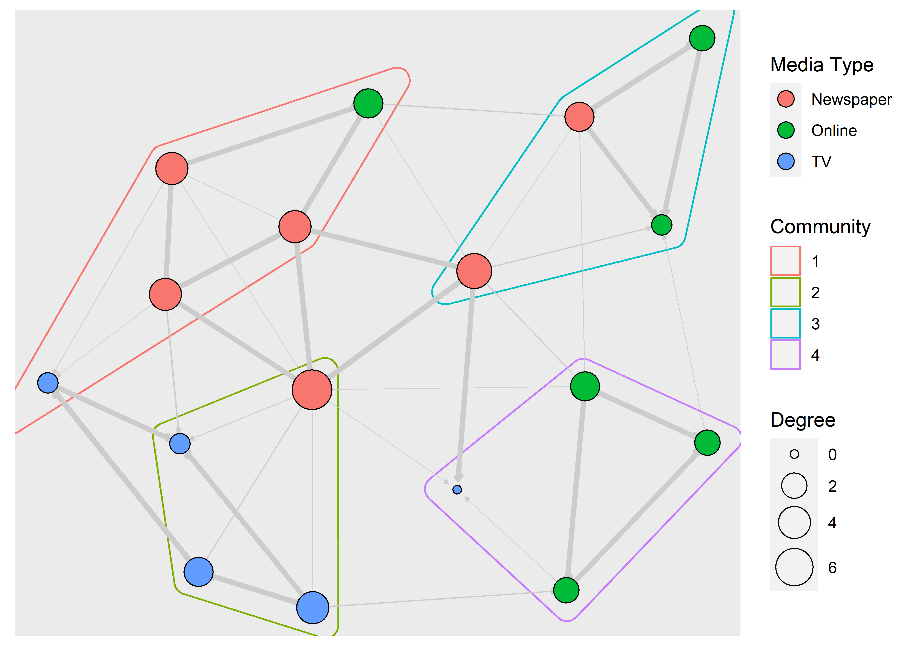
We can also plot the communities without relying on their built-in plot:
V(net)$community <- clp$membership
colrs <-
adjustcolor(c("gray50", "tomato", "gold", "yellowgreen"), alpha = .6)
plot(net, vertex.color = colrs[V(net)$community])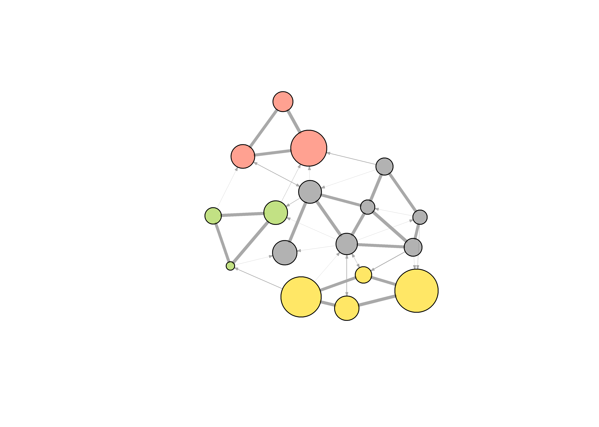
# using tidygraph
# All clustering algorithms from igraph is available in tidygraph using the group_* prefix. All of these functions return an integer vector with nodes (or edges) sharing the same integer being grouped together.
graph <- tbl_graph(nodes, links, directed = TRUE)
graph# A tbl_graph: 17 nodes and 49 edges
#
# A directed multigraph with 1 component
#
# Node Data: 17 × 5 (active)
id media media.type type.label audience.size
<chr> <chr> <int> <chr> <int>
1 s01 NY Times 1 Newspaper 20
2 s02 Washington Post 1 Newspaper 25
3 s03 Wall Street Journal 1 Newspaper 30
4 s04 USA Today 1 Newspaper 32
5 s05 LA Times 1 Newspaper 20
6 s06 New York Post 1 Newspaper 50
# … with 11 more rows
#
# Edge Data: 49 × 4
from to type weight
<int> <int> <chr> <int>
1 1 2 hyperlink 22
2 1 3 hyperlink 22
3 1 4 hyperlink 21
# … with 46 more rowsgraph %>%
activate(nodes) %>%
mutate(size = centrality_degree()) %>%
# new stuff
mutate(community = as.factor(tidygraph::group_optimal())) %>%
ggraph(., layout = "graphopt") +
geom_edge_link(
aes(width = weight),
color = "grey80",
end_cap = circle(.2, "cm"),
# clears an area near the node
arrow = arrow(
type = "closed",
ends = "last",
length = unit(1, "mm")
)) +
geom_node_point(aes(fill = community,
size = size),
shape = 21,
color = "black") +
scale_fill_manual(
name = "Community",
values = c("grey50", "gold", "tomato", "yellowgreen"),
guide = "legend") +
scale_edge_width(range = c(0.2, 1.5), guide = "none") +
scale_size_continuous("Degree", range = c(2, 10)) +
guides(fill = guide_legend(override.aes = list(pch = 21,
size = 4)))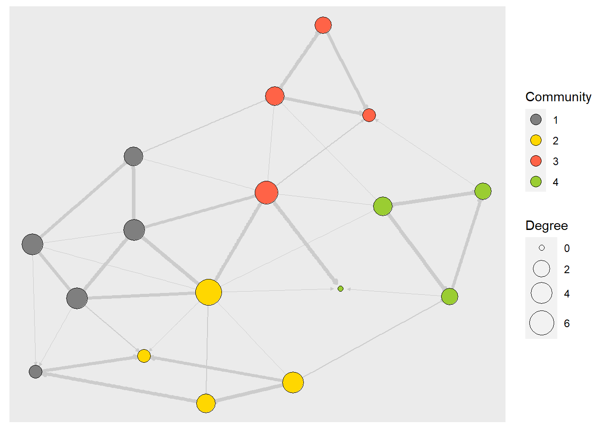
——-~~ Highlighting specific nodes or links ——–
Sometimes we want to focus the visualization on a particular node or a group of nodes. Let’s represent distance from the NYT:
-
distances()calculates shortest path from vertices in ‘v’ to ones in ‘to’.
dist.from.NYT <- distances(net,
v = V(net)[media == "NY Times"],
to = V(net),
weights = NA)
#Set colors to plot the distances:
oranges <- colorRampPalette(c("dark red", "gold"))
col <- oranges(max(dist.from.NYT)+1)
col <- col[dist.from.NYT+1]
# Let's have same coordinates for Nodes in both graph renderings
# Then we can verify that the distance calculations are the same for both renderings
coords <- igraph::layout_nicely(net)
plot(net, vertex.label = dist.from.NYT,
vertex.color = col, vertex.label.color = "black",
layout = coords)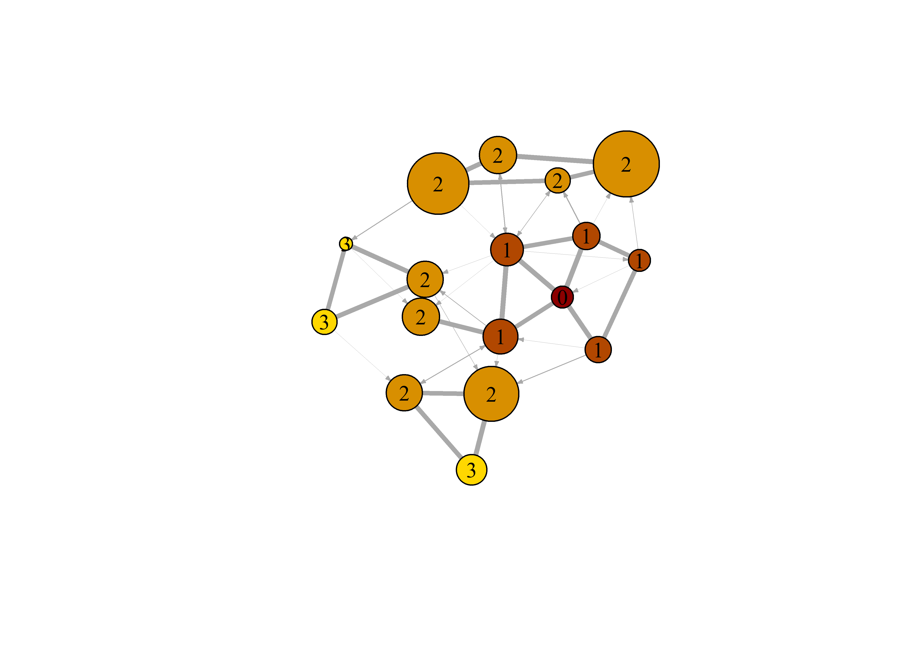
# A tbl_graph: 17 nodes and 49 edges
#
# A directed multigraph with 1 component
#
# Node Data: 17 × 5 (active)
id media media.type type.label audience.size
<chr> <chr> <int> <chr> <int>
1 s01 NY Times 1 Newspaper 20
2 s02 Washington Post 1 Newspaper 25
3 s03 Wall Street Journal 1 Newspaper 30
4 s04 USA Today 1 Newspaper 32
5 s05 LA Times 1 Newspaper 20
6 s06 New York Post 1 Newspaper 50
# … with 11 more rows
#
# Edge Data: 49 × 4
from to type weight
<int> <int> <chr> <int>
1 1 2 hyperlink 22
2 1 3 hyperlink 22
3 1 4 hyperlink 21
# … with 46 more rows# Set up NY Times as root node first
# V(net)[media == "NY Times"] cannot be used since it returns an `igraph.vs` ( i.e. a list ) object.
# We need an integer node id.
root_nyt <- graph %>%
activate(nodes) %>%
as_tibble() %>%
rowid_to_column(var = "node_id") %>%
filter(media == "NY Times") %>%
select(node_id) %>% as_vector()
root_nytnode_id
1 graph %>%
activate(nodes) %>%
mutate(size = centrality_degree()) %>%
# new stuff:
# breadth first search for all distances from the root node
mutate(order = bfs_dist(root = root_nyt)) %>%
ggraph(., layout = coords) + # same layout
geom_edge_link(
aes(width = weight),
color = "grey80",
end_cap = circle(.2, "cm"),
arrow = arrow(
type = "closed",
ends = "last",
length = unit(1, "mm")
)
) +
geom_node_point(aes(fill = order,
size = size),
shape = 21,
color = "black") +
geom_node_text(aes(label = order)) +
scale_fill_gradient(
name = "Distance from NY Times",
low = "dark red",
high = "gold",
guide = "legend"
) +
scale_edge_width(range = c(0.2, 1.5), guide = "none") +
scale_size_continuous("Degree", range = c(2, 16)) +
guides(fill = guide_legend(override.aes = list(pch = 21,
size = 4)))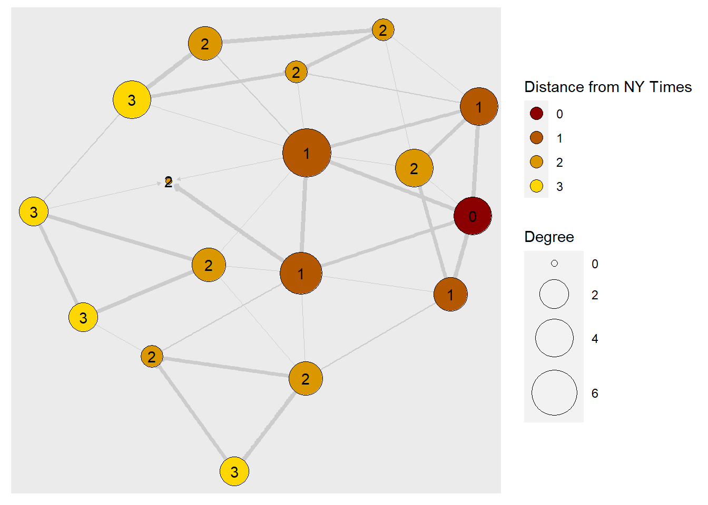
Or, a bit more readable:
Path Highlighting
We can also highlight paths between the nodes in the network.
- Say here between MSNBC and the New York Post
news.path <- shortest_paths(net,
from = V(net)[media == "MSNBC"],
to = V(net)[media == "New York Post"],
output = "both") #both path nodes and edges
news.path.distance <- distances(net,
V(net)[media == "MSNBC"],
V(net)[media == "New York Post"] )
news.path$vpath
$vpath[[1]]
+ 4/17 vertices, named, from 8e65729:
[1] s08 s03 s12 s06
$epath
$epath[[1]]
+ 3/48 edges from 8e65729 (vertex names):
[1] s08->s03 s03->s12 s12->s06
$predecessors
NULL
$inbound_edges
NULL s06
s08 5#Generate edge color variable to plot the path:
ecol <- rep("gray80", ecount(net))
ecol[unlist(news.path$epath)] <- "orange"
#Generate edge width variable to plot the path:
ew <- rep(2, ecount(net))
ew[unlist(news.path$epath)] <- 4
#Generate node color variable to plot the path:
vcol <- rep("gray40", vcount(net))
vcol[unlist(news.path$vpath)] <- "gold"
plot(net, vertex.color = vcol,
edge.color = ecol,
edge.width = ew,
edge.arrow.mode = 0,
## added lines
vertex.label = V(net)$media,
vertex.label.font = 2,
vertex.label.color = "gray40",
vertex.label.cex = .7,
layout = coords * 1.5)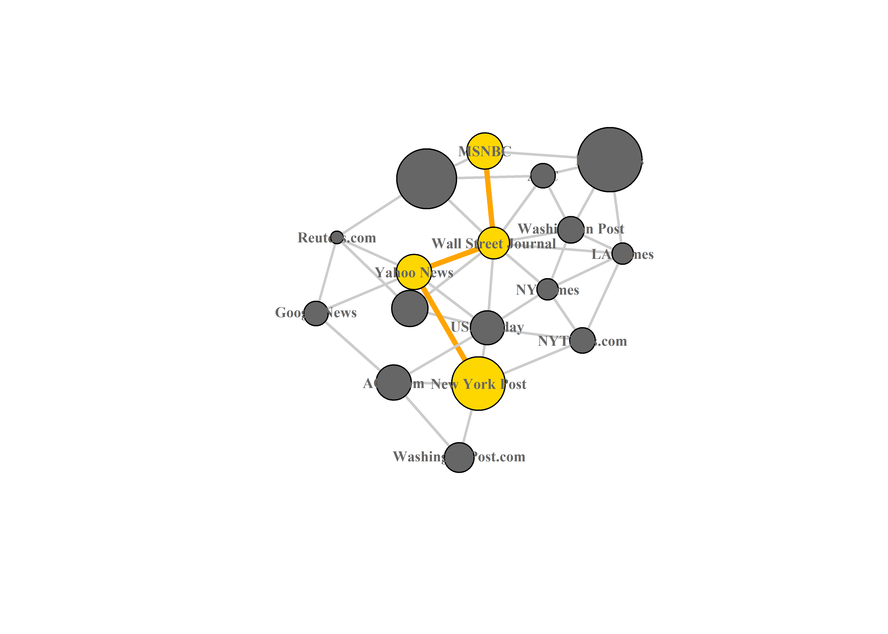
# Using tidygraph
# We need to use:
# to_shortest_path(graph, from, to, mode = "out", weights = NULL)
# Let's set up `to` and `from` nodes
#
# V(net)[media == "NY Times"] cannot be used since it returns an `igraph.vs` ( i.e. a list ) object.
# We need integer node ids for `from` and `to` in `to_shortest_path`
msnbc <- graph %>%
activate(nodes) %>%
as_tibble() %>%
rowid_to_column(var = "node_id") %>%
filter(media == "MSNBC") %>%
select(node_id) %>% as_vector()
msnbcnode_id
8 nypost <- graph %>%
activate(nodes) %>%
as_tibble() %>%
rowid_to_column(var = "node_id") %>%
filter(media == "New York Post") %>%
select(node_id) %>% as_vector()
nypostnode_id
6 # Let's create a fresh graph object using morph
# However we want to merge it back with the original `graph`
# to get an overlay plot
#
# # Can do this to obtain a separate graph
# convert(to_shortest_path,from = msnbc,to = nypost)
# However we want to merge it back with the original `graph`
# to get an overlay plot
msnbc_nyp <-
graph %>%
# first mark all nodes and edges as *not* on the shortest path
activate(nodes) %>%
mutate(shortest_path_node = FALSE) %>%
activate(edges) %>%
mutate(shortest_path_edge = FALSE) %>%
# Find shortest path between MSNBC and NY Post
morph(to_shortest_path, from = msnbc, to = nypost) %>%
# Now to mark the shortest_path nodes as TRUE
activate(nodes) %>%
mutate(shortest_path_node = TRUE) %>%
# Now to mark the shortest_path edges as TRUE
activate(edges) %>%
mutate(shortest_path_edge = TRUE) %>%
#
# Merge back into main graph; Still saving it as a `msnbc_nyp`
unmorph()
msnbc_nyp# A tbl_graph: 17 nodes and 49 edges
#
# A directed multigraph with 1 component
#
# Edge Data: 49 × 5 (active)
from to type weight shortest_path_edge
<int> <int> <chr> <int> <lgl>
1 1 2 hyperlink 22 FALSE
2 1 3 hyperlink 22 FALSE
3 1 4 hyperlink 21 FALSE
4 1 15 mention 20 FALSE
5 2 1 hyperlink 23 FALSE
6 2 3 hyperlink 21 FALSE
# … with 43 more rows
#
# Node Data: 17 × 6
id media media.type type.label audience.size shortest_path_n…
<chr> <chr> <int> <chr> <int> <lgl>
1 s01 NY Times 1 Newspaper 20 FALSE
2 s02 Washington Post 1 Newspaper 25 FALSE
3 s03 Wall Street Journal 1 Newspaper 30 TRUE
# … with 14 more rowsmsnbc_nyp %>%
activate(nodes) %>%
mutate(size = centrality_degree()) %>%
ggraph(layout = coords) +
#geom_edge_link0(colour = "grey") +
geom_edge_link0(aes(colour = shortest_path_edge,
width = shortest_path_edge)) +
geom_node_point(aes(size = size,
fill = shortest_path_node), shape = 21) +
geom_node_text(aes(label = media)) +
scale_size_continuous("Degree", range = c(2, 16)) +
scale_fill_manual("Shortest Path",
values = c("grey", "gold")) +
scale_edge_width_manual(values = c(1, 4)) +
scale_edge_colour_manual(values = c("grey", "orange")) +
guides(
fill = guide_legend(override.aes = list(pch = 21,
size = 6)),
edge_colour = "none",
edge_width = "none"
)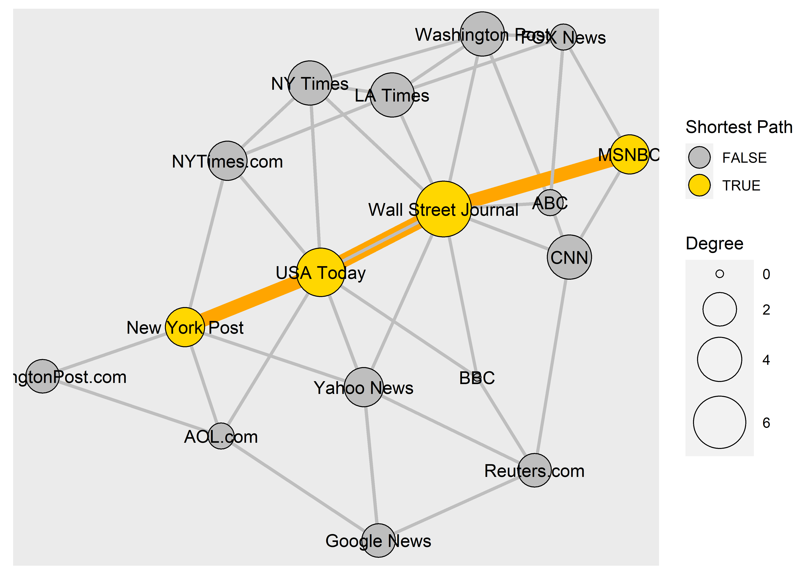
- Highlight the edges going into or out of a vertex, for instance the WSJ. For a single node, use
incident(), for multiple nodes useincident_edges()
inc.edges <-
incident(net, V(net)[media == "Wall Street Journal"], mode = "all")
#Set colors to plot the selected edges.
ecol <- rep("gray80", ecount(net))
ecol[inc.edges] <- "orange"
vcol <- rep("grey40", vcount(net))
vcol[V(net)$media == "Wall Street Journal"] <- "gold"
plot(
net,
vertex.color = vcol,
edge.color = ecol,
edge.width = 2,
layout = coords
)
# Using tidygraph
wsj <- graph %>%
activate(nodes) %>%
as_tibble() %>%
rowid_to_column(var = "node_id") %>%
filter(media == "Wall Street Journal") %>%
select(node_id) %>% as_vector()
graph %>%
activate(nodes) %>%
mutate(wsj_adjacent = node_is_adjacent(to = wsj, mode = "all",
include_to = TRUE),
size = centrality_degree()) %>%
mutate(WSJ = if_else(media == "Wall Street Journal", TRUE, FALSE)) %>%
activate(edges) %>%
mutate(wsj_links = edge_is_incident(wsj)) %>%
ggraph(., layout = coords) +
geom_edge_link0(aes(colour = wsj_links), width = 2) +
geom_node_point(aes(fill = WSJ,
size = size),shape = 21) +
geom_node_text(aes(label = media), repel = TRUE) +
scale_fill_manual("WSJ Neighbours",
values = c("grey", "gold"),
guide = guide_legend(override.aes =
list(pch = 21,
size = 5))) +
scale_edge_colour_manual("WSJ Links",
values = c("grey", "orange")) +
scale_size("Degree", range = c( 2, 16)) +
ggtitle(label = "Highlighting WSJ Neighbours and Links") +
guides(shape = "none", fill = "none" #, colour = "none"
)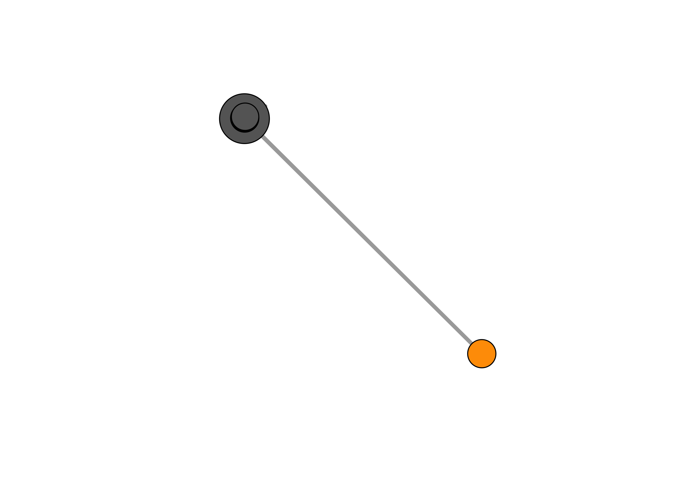
Highlight Neighbours
Or we can highlight the immediate neighbors of a vertex, say WSJ. The neighbors function finds all nodes one step out from the focal actor. To find the neighbors for multiple nodes, use adjacent_vertices(). To find node neighborhoods going more than one step out, use function ego() with parameter order set to the number of steps out to go from the focal node(s).
neigh.nodes <- neighbors(net, V(net)[media == "Wall Street Journal"], mode = "out")
# Set colors to plot the neighbors:
vcol[neigh.nodes] <- "#ff9d00"
plot(net, vertex.color = vcol)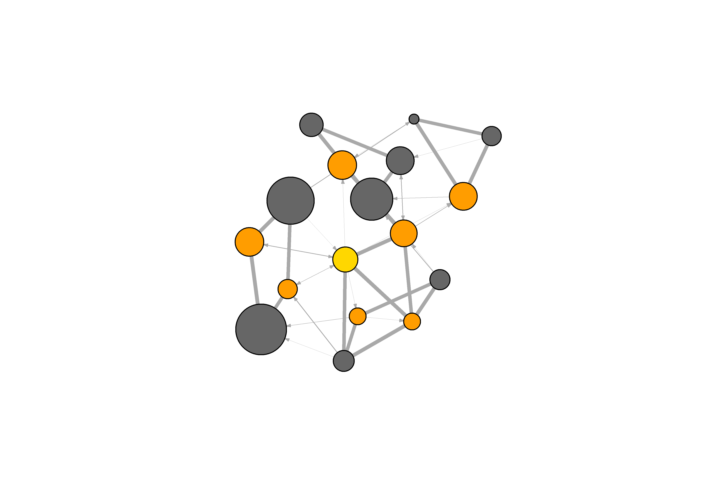
# Using tidygraph
wsj <- graph %>%
activate(nodes) %>%
as_tibble() %>%
rowid_to_column(var = "node_id") %>%
filter(media == "Wall Street Journal") %>%
select(node_id) %>% as_vector()
graph %>%
activate(nodes) %>%
mutate(wsj_adjacent = node_is_adjacent(to = wsj, mode = "all",
# remove WSJ from the list!
# highlight only the neighbours
include_to = FALSE),
size = centrality_degree()) %>%
mutate(WSJ = if_else(media == "Wall Street Journal", TRUE, FALSE)) %>%
activate(edges) %>%
mutate(wsj_links = edge_is_incident(wsj)) %>%
ggraph(., layout = coords) +
geom_edge_link0(aes(colour = wsj_links), width = 2) +
geom_node_point(aes(fill = wsj_adjacent,
size = size),shape = 21) +
geom_node_text(aes(label = media), repel = TRUE) +
scale_fill_manual("WSJ Neighbours",
values = c("grey", "gold"),
guide = guide_legend(override.aes =
list(pch = 21,
size = 5))) +
scale_edge_colour_manual("WSJ Links",
values = c("grey", "orange")) +
scale_size("Degree", range = c( 2, 16)) +
ggtitle(label = "Highlighting WSJ Neighbours and Links") +
guides(shape = "none", fill = "none" #, colour = "none"
)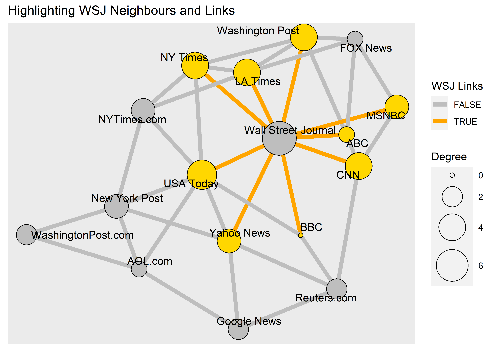
Another way to draw attention to a group of nodes: (This is generally not recommended since, depending on layout, nodes that are not ‘marked’ can accidentally get placed on top of the mark)


——-~~ Interactive plotting with ‘tkplot’ ——–
R and igraph offer interactive plotting capabilities (mostly helpful for small networks)
——-~~ Other ways to represent a network ——–
One reminder that there are other ways to represent a network:
- Heatmap of the network matrix:
netm <- as_adjacency_matrix(net, attr = "weight", sparse = F)
colnames(netm) <- V(net)$media
rownames(netm) <- V(net)$media
palf <- colorRampPalette(c("gold", "dark orange"))
# The Rowv & Colv parameters turn dendrograms on and off
heatmap(netm[,17:1], Rowv = NA, Colv = NA, col = palf(20),
scale = "none", margins = c(10,10) )- Degree distribution
deg.dist <- degree_distribution(net, cumulative = T, mode = "all")
# degree is available in `sna` too
plot(x = 0:max(igraph::degree(net)), y = 1-deg.dist, pch = 19, cex = 1.4, col = "orange", xlab = "Degree", ylab = "Cumulative Frequency")# Using Tidygraph
# https://stackoverflow.com/questions/18356860/cumulative-histogram-with-ggplot2
graph %>%
activate(nodes) %>%
mutate(degree = centrality_degree(mode = "all")) %>%
as_tibble() %>%
ggplot(aes(x = degree, y = stat(count))) +
# geom_histogram(aes(y = cumsum(..count..)), binwidth = 1) +
stat_bin(aes(y = cumsum(..count..)),
binwidth = 1,# Ta-Da !!
geom ="point",color ="orange", size = 5)Warning: The dot-dot notation (`..count..`) was deprecated in ggplot2 3.4.0.
ℹ Please use `after_stat(count)` instead.
4. Plotting two-mode networks
id media media.type media.name audience.size
1 s01 NYT 1 Newspaper 20
2 s02 WaPo 1 Newspaper 25
3 s03 WSJ 1 Newspaper 30
4 s04 USAT 1 Newspaper 32
5 s05 LATimes 1 Newspaper 20
6 s06 CNN 2 TV 56 U01 U02 U03 U04 U05 U06 U07 U08 U09 U10 U11 U12 U13 U14 U15 U16 U17 U18 U19
s01 1 1 1 0 0 0 0 0 0 0 0 0 0 0 0 0 0 0 0
s02 0 0 0 1 1 0 0 0 0 0 0 0 0 0 0 0 0 0 0
s03 0 0 0 0 0 1 1 1 1 0 0 0 0 0 0 0 0 0 0
s04 0 0 0 0 0 0 0 0 1 1 1 0 0 0 0 0 0 0 0
s05 0 0 0 0 0 0 0 0 0 0 1 1 1 0 0 0 0 0 0
s06 0 0 0 0 0 0 0 0 0 0 0 0 1 1 0 0 1 0 0
U20
s01 0
s02 1
s03 0
s04 0
s05 0
s06 0IGRAPH 9008ce1 UN-B 30 31 --
+ attr: type (v/l), name (v/c)
+ edges from 9008ce1 (vertex names):
[1] s01--U01 s01--U02 s01--U03 s02--U04 s02--U05 s02--U20 s03--U06 s03--U07
[9] s03--U08 s03--U09 s04--U09 s04--U10 s04--U11 s05--U11 s05--U12 s05--U13
[17] s06--U13 s06--U14 s06--U17 s07--U14 s07--U15 s07--U16 s08--U16 s08--U17
[25] s08--U18 s08--U19 s09--U06 s09--U19 s09--U20 s10--U01 s10--U11This time we will make nodes look different based on their type. Media outlets are blue squares, audience nodes are orange circles:
V(net2)$color <- c("steel blue", "orange")[V(net2)$type+1]
V(net2)$shape <- c("square", "circle")[V(net2)$type+1]
# Media outlets will have name labels, audience members will not:
V(net2)$label <- ""
V(net2)$label[V(net2)$type == F] <- nodes2$media[V(net2)$type == F]
V(net2)$label.cex = .6
V(net2)$label.font = 2
plot(net2, vertex.label.color = "white", vertex.size = (2-V(net2)$type)*8)# Using tidygraph
as_tbl_graph(x = links2, directed = TRUE) %>%
activate(nodes) %>%
left_join(nodes2, by = c("name" = "id")) %>%
ggraph(layout = "nicely") +
geom_edge_link0() +
geom_node_point(aes(shape = type, fill = type, size = type)) +
geom_node_text(aes(label = if_else(type, "", media)), colour = "white", size = 3) +
scale_shape_manual(
"Type",
values = c(22, 21),
labels = c("Media", "Persons"),
guide = guide_legend(override.aes = list(size = 6))
) +
scale_fill_manual(
"Type",
values = c("dodgerblue", "orange"),
labels = c("Media", "Persons")
) +
scale_size_manual(values = c(10, 4), guide = "none") igraph has a built-in bipartite layout, though it’s not the most helpful:

# using tidygraph
as_tbl_graph(x = links2, directed = TRUE) %>%
activate(nodes) %>%
left_join(nodes2, by = c("name" = "id")) %>%
ggraph(., layout = "igraph", algorithm = "bipartite") +
geom_edge_link0() +
geom_node_point(aes(shape = type, fill = type, size = type)) +
geom_node_text(aes(label = if_else(type, "", media)), colour = "white", size = 3) +
scale_shape_manual(
"Type",
values = c(22, 21),
labels = c("Media", "Persons"),
guide = guide_legend(override.aes = list(size = 6))
) +
scale_fill_manual(
"Type",
values = c("dodgerblue", "orange"),
labels = c("Media", "Persons")
) +
scale_size_manual(values = c(10, 4), guide = "none") - Using text as nodes:
par(mar = c(0,0,0,0))
plot(net2, vertex.shape = "none", vertex.label = nodes2$media,
vertex.label.color = V(net2)$color, vertex.label.font = 2,
vertex.label.cex = .95, edge.color = "gray70", edge.width = 2)# Using tidygraph
as_tbl_graph(x = links2, directed = TRUE) %>%
activate(nodes) %>%
left_join(nodes2, by = c("name" = "id")) %>%
ggraph(layout = "nicely") +
geom_edge_link(end_cap = circle(.4,"cm"),
start_cap = circle(0.4, "cm")) +
# geom_node>point(aes(shape = type, fill = type, size = type)) +
geom_node_text(aes(label= media, colour = type), size = 4) +
scale_shape_manual(
"Type",
values = c(22, 21),
labels = c("Media", "Persons"),
guide = guide_legend(override.aes = list(size = 4))
) +
scale_fill_manual(
"Type",
values = c("dodgerblue", "orange"),
labels = c("Media", "Persons")
) +
scale_size_manual(values = c(10, 4), guide = "none") 
- Using images as nodes You will need the ‘png’ package to do this:
# install.packages("png")
library("png")
img.1 <- readPNG("./images/news.png")
img.2 <- readPNG("./images/user.png")
V(net2)$raster <- list(img.1, img.2)[V(net2)$type+1]
par(mar = c(3,3,3,3))
plot(net2, vertex.shape = "raster", vertex.label = NA,
vertex.size = 16, vertex.size2 = 16, edge.width = 2)
# By the way, you can also add any image you want to any plot. For example, many #network graphs could be improved by a photo of a puppy carrying a basket full of kittens.
img.3 <- readPNG("./images/puppy.png")
rasterImage(img.3, xleft = -1.7, xright = 0, ybottom = -1.2, ytop = 0)# Using ~~tidygraph~~ visNetwork
# See this cheatsheet:
# system.file("fontAwesome/Font_Awesome_Cheatsheet.pdf", package = "visNetwork")
library(visNetwork)
as_tbl_graph(x = links2, directed = TRUE) %>%
activate(nodes) %>%
left_join(nodes2, by = c("name" = "id")) %>%
# visNetwork needs a "group" variable for grouping...
mutate(group = as.character(type)) %>%
visIgraph(.) %>%
visGroups(groupname = "FALSE",shape = "icon",
icon = list(code = "f26c", size = 75, color = "orange")) %>%
visGroups(groupname = "TRUE",shape = "icon",
icon = list(code = "f007", size = 75)) %>%
addFontAwesome()We can also generate and plot bipartite projections for the two-mode network : (co-memberships are easy to calculate by multiplying the network matrix by its transposed matrix, or using igraph’s bipartite.projection function)
net2.bp <- bipartite.projection(net2)
#We can calculate the projections manually as well:
as_incidence_matrix(net2) %*% t(as_incidence_matrix(net2)) s01 s02 s03 s04 s05 s06 s07 s08 s09 s10
s01 3 0 0 0 0 0 0 0 0 1
s02 0 3 0 0 0 0 0 0 1 0
s03 0 0 4 1 0 0 0 0 1 0
s04 0 0 1 3 1 0 0 0 0 1
s05 0 0 0 1 3 1 0 0 0 1
s06 0 0 0 0 1 3 1 1 0 0
s07 0 0 0 0 0 1 3 1 0 0
s08 0 0 0 0 0 1 1 4 1 0
s09 0 1 1 0 0 0 0 1 3 0
s10 1 0 0 1 1 0 0 0 0 2Warning in rm(list = cmd, envir = .tkplot.env): object 'tkp.1' not found U01 U02 U03 U04 U05 U06 U07 U08 U09 U10 U11 U12 U13 U14 U15 U16 U17 U18 U19
U01 2 1 1 0 0 0 0 0 0 0 1 0 0 0 0 0 0 0 0
U02 1 1 1 0 0 0 0 0 0 0 0 0 0 0 0 0 0 0 0
U03 1 1 1 0 0 0 0 0 0 0 0 0 0 0 0 0 0 0 0
U04 0 0 0 1 1 0 0 0 0 0 0 0 0 0 0 0 0 0 0
U05 0 0 0 1 1 0 0 0 0 0 0 0 0 0 0 0 0 0 0
U06 0 0 0 0 0 2 1 1 1 0 0 0 0 0 0 0 0 0 1
U07 0 0 0 0 0 1 1 1 1 0 0 0 0 0 0 0 0 0 0
U08 0 0 0 0 0 1 1 1 1 0 0 0 0 0 0 0 0 0 0
U09 0 0 0 0 0 1 1 1 2 1 1 0 0 0 0 0 0 0 0
U10 0 0 0 0 0 0 0 0 1 1 1 0 0 0 0 0 0 0 0
U11 1 0 0 0 0 0 0 0 1 1 3 1 1 0 0 0 0 0 0
U12 0 0 0 0 0 0 0 0 0 0 1 1 1 0 0 0 0 0 0
U13 0 0 0 0 0 0 0 0 0 0 1 1 2 1 0 0 1 0 0
U14 0 0 0 0 0 0 0 0 0 0 0 0 1 2 1 1 1 0 0
U15 0 0 0 0 0 0 0 0 0 0 0 0 0 1 1 1 0 0 0
U16 0 0 0 0 0 0 0 0 0 0 0 0 0 1 1 2 1 1 1
U17 0 0 0 0 0 0 0 0 0 0 0 0 1 1 0 1 2 1 1
U18 0 0 0 0 0 0 0 0 0 0 0 0 0 0 0 1 1 1 1
U19 0 0 0 0 0 1 0 0 0 0 0 0 0 0 0 1 1 1 2
U20 0 0 0 1 1 1 0 0 0 0 0 0 0 0 0 0 0 0 1
U20
U01 0
U02 0
U03 0
U04 1
U05 1
U06 1
U07 0
U08 0
U09 0
U10 0
U11 0
U12 0
U13 0
U14 0
U15 0
U16 0
U17 0
U18 0
U19 1
U20 2par(mfrow = c(1, 2))
plot(
net2.bp$proj1,
vertex.label.color = "black",
vertex.label.dist = 2,
vertex.label = nodes2$media[!is.na(nodes2$media.type)]
)
plot(
net2.bp$proj2,
vertex.label.color = "black",
vertex.label.dist = 2,
vertex.label = nodes2$media[is.na(nodes2$media.type)]
)# Using tidygraph
# Calculate projections and add attributes/labels
proj1 <-
as_incidence_matrix(net2) %*% t(as_incidence_matrix(net2)) %>%
as_tbl_graph() %>%
activate(nodes) %>%
left_join(., nodes2, by = c("name" = "id"))Warning in (is.null(rownames(x)) && is.null(colnames(x))) || colnames(x) == :
'length(x) = 10 > 1' in coercion to 'logical(1)'proj2 <-
t(as_incidence_matrix(net2)) %*% as_incidence_matrix(net2) %>% as_tbl_graph() %>%
activate(nodes) %>%
left_join(., nodes2, by = c("name" = "id"))Warning in (is.null(rownames(x)) && is.null(colnames(x))) || colnames(x) == :
'length(x) = 20 > 1' in coercion to 'logical(1)'p1 <- proj1 %>%
ggraph(layout = "graphopt") +
geom_edge_link0() +
geom_node_point(size = 6, colour = "orange") +
geom_node_text(aes(label = media), repel = TRUE)
p2 <- proj2 %>%
ggraph(layout = "graphopt") +
geom_edge_link0() +
geom_node_point(
aes(colour = media.type),
size = 6,
shape = 15,
colour = "dodgerblue"
) +
geom_node_text(aes(label = media), repel = TRUE)
p1 + p2
5. Plotting multiplex networks
In some cases, the networks we want to plot are multigraphs: they can have multiple edges connecting the same two nodes. A related concept, multiplex networks, contain multiple types of ties – e.g. friendship, romantic, and work relationships between individuals.
In our example network, we also have two tie types: hyperlinks and mentions. One thing we can do is plot each type of tie separately:
E(net)$width <- 2
plot(
net,
edge.color = c("dark red", "slategrey")[(E(net)$type == "hyperlink") +
1],
vertex.color = "gray40",
layout = layout_in_circle,
edge.curved = .3
)
# Another way to delete edges using the minus operator:
net.m <- net - E(net)[E(net)$type == "hyperlink"]
net.h <- net - E(net)[E(net)$type == "mention"]
#Plot the two links separately:
par(mfrow = c(1, 2))
plot(net.h,
vertex.color = "orange",
layout = layout_with_fr,
main = "Tie: Hyperlink")
plot(net.m,
vertex.color = "lightsteelblue2",
layout = layout_with_fr,
main = "Tie: Mention")
- Make sure the nodes stay in the same place in both plots:
par(mfrow = c(1, 2), mar = c(1, 1, 4, 1))
l <- layout_with_fr(net)
plot(net.h,
vertex.color = "orange",
layout = l,
main = "Tie: Hyperlink")
plot(net.m,
vertex.color = "lightsteelblue2",
layout = l,
main = "Tie: Mention")
#Using tidygraph
layout <- layout_in_circle(net)
p1 <- tbl_graph(nodes, links, directed = TRUE) %>%
activate(nodes) %>%
mutate(size = centrality_degree()) %>%
activate(edges) %>%
filter(type == "hyperlink") %>%
# reusing the earlier computed layout
ggraph(layout = layout) +
geom_edge_arc(strength = 0.05) +
geom_node_point(aes(size = size), shape = 21,
fill = "orange") +
scale_size(range = c(2, 12)) +
labs(title = "Tie: Hyperlink") +
theme(aspect.ratio = 1,,
legend.position = "bottom")
p2 <- tbl_graph(nodes, links, directed = TRUE) %>%
activate(nodes) %>%
mutate(size = centrality_degree()) %>%
activate(edges) %>%
filter(type == "mention") %>%
# reusing the earlier computed layout
ggraph(layout = layout) +
geom_edge_arc(strength = 0.05) +
geom_node_point(aes(size = size), shape = 21,
fill = "lightsteelblue2") +
scale_size(range = c(2, 12)) +
labs(title = "Tie: Mention") +
theme(aspect.ratio = 1, legend.position = "bottom")
wrap_plots(p1, p2,guides = "collect") &
# note this "pipe" for patchwork!
theme(legend.position = "none")
In our example network, we don’t have node dyads connected by multiple types of connections (we never have both a ‘hyperlink’ and a ‘mention’ tie between the same two news outlets) – however that could happen.
Note: See the edges between s03 and s10…these are in opposite directions. So no dyads.
layout <- layout_in_circle(net)
tbl_graph(nodes, links, directed = TRUE) %>%
activate(nodes) %>%
mutate(size = centrality_degree()) %>%
# reusing the earlier computed layout
ggraph(layout = layout) +
geom_edge_arc(strength = 0.05, aes(colour = type)) +
geom_node_point(aes(size = size), shape = 21,
fill = "orange") +
geom_node_text(aes(label = id), repel = TRUE) +
scale_size(range = c(2, 12)) +
labs(title = "Tie: Hyperlink") +
theme(aspect.ratio = 1,,
legend.position = "bottom")
One challenge in visualizing multiplex networks is that multiple edges between the same two nodes may get plotted on top of each other in a way that makes them impossible to distinguish. For example, let us generate a simple multiplex network with two nodes and three ties between them:
multigtr <- graph(edges = c(1, 2, 1, 2, 1, 2), n = 2)
l <- layout_with_kk(multigtr)
# Let's just plot the graph:
plot(
multigtr,
vertex.color = "lightsteelblue",
vertex.frame.color = "white",
vertex.size = 40,
vertex.shape = "circle",
vertex.label = NA,
edge.color = c("gold", "tomato", "yellowgreen"),
edge.width = 10,
edge.arrow.size = 5,
edge.curved = 0.1,
layout = l
)
# Using tidygraph
multigtr %>%
as_tbl_graph() %>%
activate(edges) %>%
mutate(edge_col = c("gold", "tomato", "yellowgreen")) %>%
ggraph(., layout = l) +
geom_edge_arc(strength = 0.1, aes(colour = edge_col)) +
geom_node_point(size = 4, colour = "lightsteelblue") +
theme(legend.position = "none")
Because all edges in the graph have the same curvature, they are drawn over each other so that we only see the last one. What we can do is assign each edge a different curvature. One useful function in ‘igraph’ called curve_multiple() can help us here. For a graph G, curve.multiple(G) will generate a curvature for each edge that maximizes visibility.
plot(
multigtr,
vertex.color = "lightsteelblue",
vertex.frame.color = "white",
vertex.size = 40,
vertex.shape = "circle",
vertex.label = NA,
edge.color = c("gold", "tomato", "yellowgreen"),
edge.width = 10,
edge.arrow.size = 5,
edge.curved = curve_multiple(multigtr),
layout = l
)
multigtr %>%
as_tbl_graph() %>%
activate(edges) %>%
mutate(edge_col = c("gold", "tomato", "yellowgreen")) %>%
ggraph(., layout = l) +
geom_edge_fan(strength = 0.1, aes(colour = edge_col),width = 2) +
geom_node_point(size = 4, colour = "lightsteelblue") +
theme(legend.position = "none")
And that is the end of this reoworked tutorial! Hope you enjoyed it and found it useful!!